<!doctype html>
<html lang="en">
<head>
  <meta charset="utf-8">
  <meta name="viewport" content="width=device-width, initial-scale=1">
  <title>arxiv digest — 2026-06-02</title>
  <style>
:root {
  --bg: #ffffff;
  --fg: #1f2328;
  --muted: #59636e;
  --border: #d0d7de;
  --card: #f6f8fa;
  --link: #0969da;
}
body {
  max-width: 980px;
  margin: 0 auto;
  padding: 2rem 1rem 5rem;
  font-family: -apple-system, BlinkMacSystemFont, "Segoe UI", Helvetica, Arial, sans-serif;
  line-height: 1.55;
  color: var(--fg);
  background: var(--bg);
}
a { color: var(--link); }
img { max-width: 100%; height: auto; }
pre, code { background: var(--card); border-radius: 6px; }
pre { padding: 1rem; overflow-x: auto; }
blockquote { border-left: 4px solid var(--border); padding-left: 1rem; color: var(--muted); }
details { margin: 0.6rem 0; }
summary { cursor: pointer; font-weight: 600; }
.paper-figures-scroll {
  display: flex;
  gap: 1rem;
  overflow-x: auto;
  overscroll-behavior-x: contain;
  padding: 0.75rem 0.25rem 1rem;
  margin: 1rem 0 1.25rem;
  border-top: 1px solid var(--border);
  border-bottom: 1px solid var(--border);
  scroll-snap-type: x proximity;
}
.paper-figure-card {
  flex: 0 0 min(260px, 72vw);
  scroll-snap-align: start;
  background: var(--card);
  border: 1px solid var(--border);
  border-radius: 12px;
  padding: 0.55rem;
}
.paper-figure-card img {
  display: block;
  width: 100%;
  max-height: 240px;
  object-fit: contain;
  background: white;
  border-radius: 8px;
}
.paper-figure-caption {
  display: block;
  margin-top: 0.5rem;
  color: var(--muted);
  font-size: 0.85rem;
}
.figure-strip-hint {
  color: var(--muted);
  font-size: 0.9rem;
  margin-bottom: -0.3rem;
}
</style>
  <!-- MathJax: renders $...$ inline math and $$...$$ display math, plus
       \(...\) and \[...\]. Loaded from the official CDN; works offline
       once cached. Configured to skip code/pre blocks so arxiv IDs that
       look like dollar amounts don't get mangled. -->
  <script>
    window.MathJax = {
      tex: {
        inlineMath: [['$', '$'], ['\\(', '\\)']],
        displayMath: [['$$', '$$'], ['\\[', '\\]']],
        processEscapes: true,
        processEnvironments: true
      },
      options: {
        skipHtmlTags: ['script', 'noscript', 'style', 'textarea', 'pre', 'code'],
        ignoreHtmlClass: 'tex2jax_ignore',
        processHtmlClass: 'tex2jax_process'
      }
    };
  </script>
  <script id="MathJax-script" async
    src="https://cdn.jsdelivr.net/npm/mathjax@3/es5/tex-chtml.js"></script>
</head>
<body>
<header style="background-color: #333; color: white; padding: 15px; margin-bottom: 20px;">
  <h1 style="margin: 0; font-size: 24px;">
    <a href="https://ochelpan.github.io/arXiv_clean/" style="color: white; text-decoration: none;">Main</a>
  </h1>
</header>

<h1>Daily arXiv Report</h1>

<hr>
<p>
<a href="index.html">← Index</a>
 · <a href="papers_04.html">← Previous</a> · <a href="papers_06.html">Next →</a>
</p>
<hr>

<h2>Papers 81–100</h2>
<p><a id="paper-2606.02094"></a></p>
<h3 id="anisotropic-moire-fractional-chern-insulators-and-their-phase-transitions"><a href="http://arxiv.org/abs/2606.02094v1">Anisotropic Moiré Fractional Chern Insulators and Their Phase Transitions</a></h3>
<p><strong>Authors:</strong> Bo Peng, Jin-Xin Hu<br>
<strong>Type:</strong> theory · <strong>Category:</strong> strongly correlated electrons · <strong>PDF:</strong> <a href="https://arxiv.org/pdf/2606.02094v1">https://arxiv.org/pdf/2606.02094v1</a><br>
<strong>Analysis basis:</strong> full PDF text, analyzed in chunks
<strong>Topic relevance:</strong> <code>analog quantum simulation</code> <strong>3/5</strong> · <code>driven-dissipative phase transition</code> <strong>1/5</strong></p>
<div class="figure-strip-hint">↔ Scroll figures horizontally</div>
<div class="paper-figures-scroll">
<figure class="paper-figure-card">
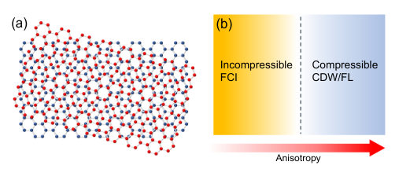
<figcaption class="paper-figure-caption"><b>Fig 1.</b> FIG. 1. Schematic picture of moir´e heterostructure formed by twisted bilayer honeycomb lattice such as graphene or tran- sition metal dichalcogenides. (b) When anisotropy is intro- duced, there is the phase transition from incompressible phase (FCI) with topological gap to compressible phase (CDW or Fermi liquid).</figcaption>
</figure>
<figure class="paper-figure-card">
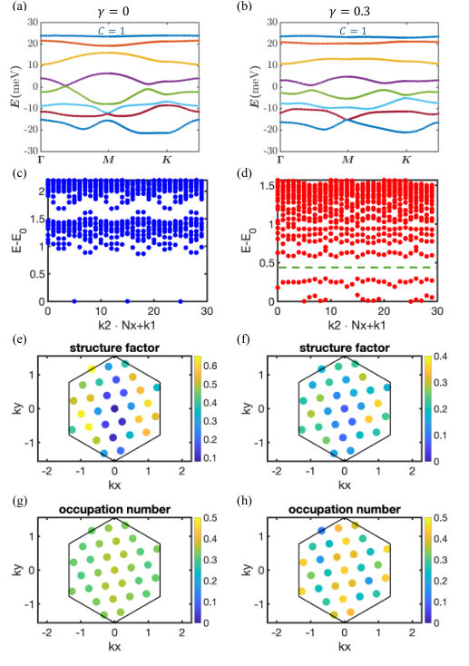
<figcaption class="paper-figure-caption"><b>Fig 2.</b> FIG. 2. Dispersion of the single-particle Hamiltonian, spec- tra of the screened Coulomb interaction projected onto the Chern band, Structure factor, and occupation number of ground states. (a,b) Energy dispersion of Eq. (1) without and with internal magnetic field modulation, corresponding to γ = 0 and γ = 0.3, respectively. (c,d) Spectra of the screened Coulomb interaction projected onto the Chern band for (γ = 0) and γ = 0.3, respectively. (e,f) Structure factor of the ground states under the projected screened Coulomb interaction for γ = 0 and γ = 0.3, respectively. (g,h) Orbital occupation number of the ground state for γ = 0 and γ = 0.3, respectively.</figcaption>
</figure>
<figure class="paper-figure-card">
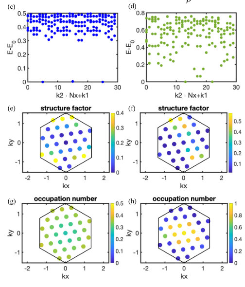
<figcaption class="paper-figure-caption"><b>Fig 3.</b> FIG. 3. (a) The schematic of stretching the lattice to in- duce anisotropy. (b) FCI gap and ground state bandwidth as functions of lattice ratio β. (c,d) The energy spectra of the Coulomb interaction on the ideal flat band corresponding to β = 1 and β = 0.5, respectively. (e,f) Structure factor of the ground states under the Coulomb interaction projected onto the ideal flat band corresponding to a regular honeycomb lat- tice (β = 1) and a stretched lattice (β = 0.5), respectively. (g,h) Orbital occupation number of the ground state for β = 1 and β = 0.5, respectively.</figcaption>
</figure>
<figure class="paper-figure-card">
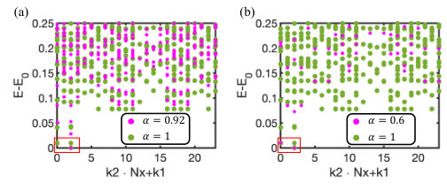
<figcaption class="paper-figure-caption"><b>Fig 4.</b> FIG. 4. The spectra of Coulomb interaction on the first Landau Level at filling ν = 1/2 for (a) gi = δab with α = 1 (green dots) and α = 0.92 (magenta dots). (b) gi = gm with α = 1 (green dots) and α = 0.6 (magenta dots). The α = 1 corresponds to the isotropic case, giving the sixfold Moore- Read states in the red boxes.</figcaption>
</figure>
</div>

<p><strong>Summary.</strong> This work explores how lattice anisotropy destabilizes Fractional Chern Insulator (FCI) phases in moiré materials. By tuning anisotropy, the system undergoes quantum phase transitions from a topological insulator to competing charge-density-wave or Fermi-liquid states. This establishes anisotropy as a powerful tool for engineering and exploring diverse correlated phases in moiré heterostructures.</p>
<p><strong>Why it may be interesting.</strong> The mechanism of anisotropy-driven phase transitions from topological to symmetry-broken/compressible states provides a general framework for engineering correlated phases in moiré systems, relevant to understanding emergent quantum states in artificial lattices.</p>
<details>
<summary>Detailed structure</summary>
<p><strong>Main problem.</strong> The study investigates the stability and nature of Fractional Chern Insulator (FCI) phases in moiré heterostructures when subjected to varying degrees of lattice anisotropy.</p>
<p><strong>Main result.</strong> Sufficiently strong lattice anisotropy drives quantum phase transitions, destabilizing the incompressible FCI state into competing charge-density-wave (CDW) or Fermi-liquid (FL) phases.</p>
<p><strong>Method.</strong> The research employs theoretical modeling using continuum Hamiltonians and analyzing key many-body observables like the structure factor and topological gap.</p>
<p><strong>Model / system.</strong> The system is based on moiré heterostructures, such as twisted TMDs ($  ext{MoTe}_2$), modeled via a continuum Hamiltonian incorporating interlayer tunneling and electron-electron interactions.</p>
<p><strong>Key observables.</strong> Hall conductivity ($\sigma_{xy}$), topological gap size, structure factor $S(\mathbf{q})$, and Bloch state occupation numbers ($n_k$).</p>
<p><strong>Important parameters / regimes.</strong> Lattice anisotropy, controlled by interlayer momentum shift ($\gamma_q b(t)$) induced by heterostrain, or lattice stretching ($eta$).</p>
<p><strong>Assumptions / limitations.</strong> The analysis often utilizes the single Landau Level (LL) approximation and treats the interaction via projection onto the Chern band.</p>
<p><strong>Figures summary.</strong> Figures illustrate the phase transition from FCI (topological gap) to CDW/FL as anisotropy increases, showing changes in $S(\mathbf{q})$ and $n_k$.</p>
<p><strong>Paper structure.</strong> The paper systematically analyzes the effect of anisotropy on the FCI state, first showing robustness to moderate strain, then detailing the transition mechanism to CDW/FL states, and finally comparing these findings to anisotropic FQHE models.</p>
</details>
<details>
<summary>Abstract</summary>
<p>Recently, moiré heterostructures have been observed to host fractional Chern insulator (FCI) phases at zero magnetic field. In this work, we show that the FCI phases are robust against moderate lattice anisotropy, while sufficiently strong anisotropy drives quantum phase transitions from incompressible topological phases to competing charge-density-wave (CDW) and Fermi-liquid (FL) phases. Specifically, in the case of twisted transition metal dichalcogenides (such as MoTe$_2$), the anisotropy arises from an interlayer momentum shift induced by heterostrain. We find that increasing anisotropy suppresses the many-body topological gap, eventually destabilizing the fractional topological phase. Beyond a critical anisotropy value, the system gradually transitions to a symmetry-broken state characterized by stripe-like CDW order. It has a Landau Level counterpart, where effective mass anisotropy provides an additional tuning knob for the fractional quantum Hall state; sufficiently strong anisotropy drives a transition to a charge-ordered phase. Moreover, in the anisotropic ideal Chern band model with lattice stretching, a Fermi liquid phase emerges as anisotropy increases. Our results establish that anisotropy provides a direct route for engineering and exploring competing correlated phases in FCI states based on moiré materials.</p>
</details>
<p><sub><a href="#top">↑ back to top</a></sub></p>

<p><a id="paper-2606.02416"></a></p>
<h3 id="bounds-on-nonlocality-and-random-access-codes-from-extended-information-causality-principle"><a href="http://arxiv.org/abs/2606.02416v1">Bounds on Nonlocality and Random Access Codes from Extended Information Causality Principle</a></h3>
<p><strong>Authors:</strong> Prabhav Jain, Nikolai Miklin, Mariami Gachechiladze<br>
<strong>Type:</strong> theory · <strong>Category:</strong> quantum information and computing · <strong>PDF:</strong> <a href="https://arxiv.org/pdf/2606.02416v1">https://arxiv.org/pdf/2606.02416v1</a><br>
<strong>Analysis basis:</strong> full PDF text, analyzed in chunks
<strong>Topic relevance:</strong> <code>entanglement &amp; information structure</code> <strong>3/5</strong> · <code>Keldysh / 2PI / non-Gaussian methods</code> <strong>1/5</strong></p>
<div class="figure-strip-hint">↔ Scroll figures horizontally</div>
<div class="paper-figures-scroll">
<figure class="paper-figure-card">
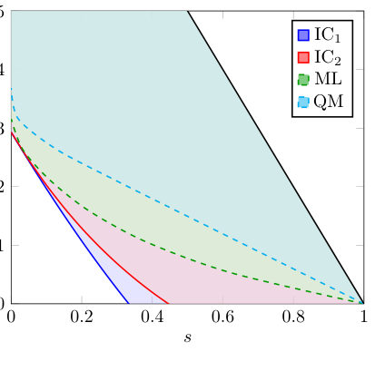
<figcaption class="paper-figure-caption"><b>Fig 1.</b> FIG. 2. A comparison of the inequalities obtained from the original formulation of IC (IC1) and its extension (IC2) in a chosen correlation slice in the d2dd scenario (d = 3). The axes correspond to the weights of each distribution described in Eq. (12). The dotted lines corresponding to ML and quantum mechanics (QM) were computed numerically using the NPA hierarchy.</figcaption>
</figure>
<figure class="paper-figure-card">
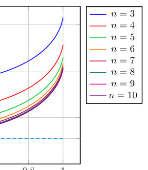
<figcaption class="paper-figure-caption"><b>Fig 2.</b> FIG. 3. Plot of critical values of e vs. the channel parameter ec for n = 3, . . . , 10.</figcaption>
</figure>
</div>

<p><strong>Summary.</strong> This paper develops an extended version of the Information Causality principle to place stronger constraints on quantum correlations and nonlocality. It applies these tools to analyze the performance limits of entanglement-assisted random access codes. While the extension yields stronger bounds in some Bell tests, it ultimately shows that for the specific RACs analyzed, the original IC bounds remain optimal.</p>
<p><strong>Why it may be interesting.</strong> The rigorous derivation of new, tighter bounds on nonlocality using information-theoretic principles provides fundamental constraints on physical theories beyond quantum mechanics, which is crucial for understanding the limits of quantum correlations.</p>
<details>
<summary>Detailed structure</summary>
<p><strong>Main problem.</strong> The paper aims to derive tighter theoretical bounds on quantum correlations (nonlocality) and the success probabilities of Random Access Codes (RACs) by extending the Information Causality (IC) principle.</p>
<p><strong>Main result.</strong> The extended IC principle yields new, tighter quantum Bell inequalities in certain scenarios, although for entanglement-assisted random access codes, the extended principle does not improve the bounds over the original IC principle.</p>
<p><strong>Method.</strong> The authors use advanced information-theoretic techniques, including deriving quantum Bell inequalities from the extended IC statement and applying optimization methods (like KKT conditions) to bound specific expressions.</p>
<p><strong>Model / system.</strong> The analysis is conducted on non-signaling correlations (Bell scenarios) and applied to the theoretical framework of entanglement-assisted random access codes (EARACs) and general communication channels.</p>
<p><strong>Key observables.</strong> Quantum Bell inequalities (e.g., $ ext{Inn}_{22}$ expression), winning probabilities for RACs, and Shannon mutual information.</p>
<p><strong>Important parameters / regimes.</strong> The analysis explores limits such as zero classical channel capacity ($\gamma 	o 0$) and varying input correlation parameters ($\epsilon$).</p>
<p><strong>Assumptions / limitations.</strong> The analysis relies on extending the IC principle to allow correlations among Alice's inputs, and in some parts, assumes uniform marginals or specific error channel structures.</p>
<p><strong>Figures summary.</strong> Figures compare the bounds derived from the original IC, the extended IC, and other known bounds (ML, QM) across various dimensions ($d^2d$ scenario).</p>
<p><strong>Paper structure.</strong> The paper progresses from establishing the extended IC principle and deriving new Bell inequalities for general scenarios, to applying these inequalities to derive bounds on EARACs, and finally confirming the optimality of the original IC bounds for the specific EARAC case.</p>
</details>
<details>
<summary>Abstract</summary>
<p>Information Causality was introduced as a physical principle for constraining the set of nonlocal correlations. In recent work, we proposed an extension of Information Causality that allows correlations among Alice's inputs. This extended principle yields tighter constraints than the original formulation and recovers part of the quantum boundary in certain Bell scenarios. In this work, we further investigate the implications of extended Information Causality and apply it to scenarios beyond binary inputs and outputs. We derive a family of quantum Bell inequalities that strengthen previously known constraints on quantum correlations. Using these inequalities, we obtain an improved analytical bound for the Collins-Gisin family of Bell inequalities. We also apply Information Causality to entanglement-assisted random access codes and derive new theory-independent analytical bounds on the winning probability. For this latter task, we prove that, despite being stronger in general, the extended principle does not improve the bounds obtained from the original Information Causality principle. This suggests that the existing Information Causality bounds are optimal for this class of random access codes.</p>
</details>
<p><sub><a href="#top">↑ back to top</a></sub></p>

<p><a id="paper-2606.00214"></a></p>
<h3 id="extracting-central-charge-from-ground-state-overlaps-of-spatially-deformed-hamiltonians"><a href="http://arxiv.org/abs/2606.00214v1">Extracting central charge from ground-state overlaps of spatially deformed Hamiltonians</a></h3>
<p><strong>Authors:</strong> Chen Bai, Xinyu Sun, Liang-Hong Mo, Hong-Hao Tu<br>
<strong>Type:</strong> theory · <strong>Category:</strong> strongly correlated electrons · <strong>PDF:</strong> <a href="https://arxiv.org/pdf/2606.00214v1">https://arxiv.org/pdf/2606.00214v1</a><br>
<strong>Analysis basis:</strong> full PDF text, analyzed in chunks
<strong>Topic relevance:</strong> <code>entanglement &amp; information structure</code> <strong>3/5</strong> · <code>analog quantum simulation</code> <strong>1/5</strong></p>
<div class="figure-strip-hint">↔ Scroll figures horizontally</div>
<div class="paper-figures-scroll">
<figure class="paper-figure-card">
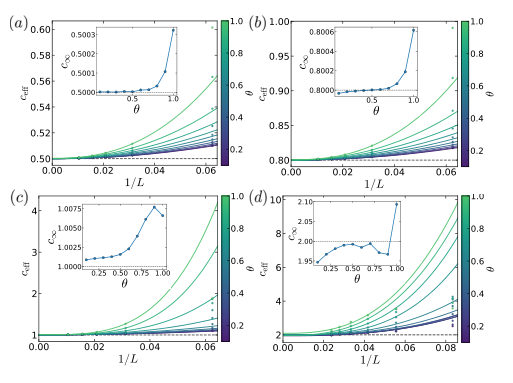
<figcaption class="paper-figure-caption"><b>Fig 1.</b> FIG. 1. Finite-size extrapolation of the effective central charge for q = 2 and different deformation parameters θ in four paradigmatic critical chains: (a) Ising, (b) three- state Potts, (c) spin- 1</figcaption>
</figure>
<figure class="paper-figure-card">
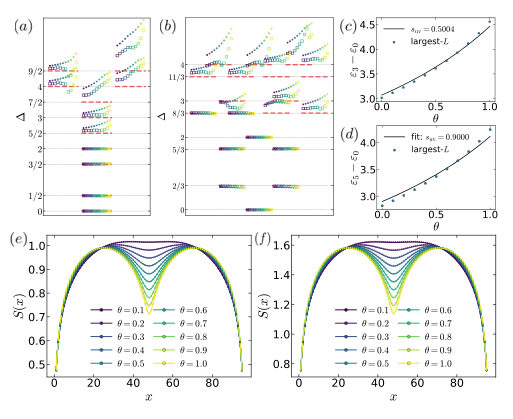
<figcaption class="paper-figure-caption"><b>Fig 2.</b> FIG. 2. Entanglement spectrum and entanglement entropy (S(x) = SA(x, 0)) of the q = 2 deformed Ising and three- state Potts chains. (a,b) Rescaled entanglement spectra for the (a) Ising and (b) three-state Potts chains, normalized by setting the stress-tensor level to ∆= 2. Different colors cor- respond to different θ values, as indicated in panels (e) and (f). Circles represent the numerical data for L = 96, squares show the thermodynamic-limit values extrapolated using the fitting form aL−p + b based on the last four largest sizes, and red dashed lines mark the boundary-CFT predictions (free boundary conditions on both entangling points). (c,d) Spec- tral gaps used for rescaling as...</figcaption>
</figure>
<figure class="paper-figure-card">
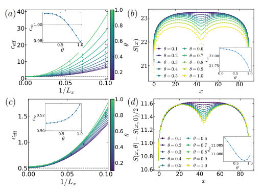
<figcaption class="paper-figure-caption"><b>Fig 3.</b> FIG. 3. Edge-state central charge and entanglement entropy in the q = 2 deformed QWZ model. (a) Finite-size extrap- olation of the effective central charge ceff for the two-edge deformation, using Lx = 10, 14, 18, 22, 30, 50, 70, 90 at fixed Ly = 30. Colored markers represent numerical data for dif- ferent deformation strengths θ, and solid curves show the cor- responding finite-size fits of the form aL−p +b, obtained from the four largest system sizes. The inset shows the extrapo- lated central charge c∞(θ) in the thermodynamic limit, with the dashed line indicating the expected CFT value. (b) En- tanglement entropy profile S(x) for the two-edge deformation. Numerical data are shown as...</figcaption>
</figure>
</div>

<p><strong>Summary.</strong> This work introduces a novel technique to measure the central charge of a CFT by analyzing the ground-state overlap of a system subjected to a $q$-Möbius spatial deformation. By applying this method to critical 1D chains and 2D topological insulators, the authors show that the overlap provides a simple, robust, and universal probe of fundamental CFT data using only wave-function properties.</p>
<p><strong>Why it may be interesting.</strong> This provides a powerful, purely wave-function-based diagnostic tool to probe universal CFT properties (like $c$) in complex, interacting quantum many-body systems, which is highly relevant for understanding critical points in condensed matter.</p>
<details>
<summary>Detailed structure</summary>
<p><strong>Main problem.</strong> The central problem is developing a method to extract the central charge ($c$) of a $(1+1)$-dimensional Conformal Field Theory (CFT) using only ground-state overlaps derived from spatially deformed Hamiltonians.</p>
<p><strong>Main result.</strong> The ground-state overlap under $q$-Möbius deformations provides a simple and robust, wave-function-based probe for the central charge in critical quantum chains and topological edge modes.</p>
<p><strong>Method.</strong> The authors derive an exact overlap formula using CFT techniques applied to the $q$-Möbius deformation, and then construct a lattice estimator based on this overlap.</p>
<p><strong>Model / system.</strong> The study applies to gapless 1D quantum systems, including critical chains (Ising, Potts, Heisenberg) and the edge modes of 2D Chern insulators (QWZ model). The Hamiltonian is subjected to a spatially modulated $q$-Möbius deformation.</p>
<p><strong>Key observables.</strong> Central charge ($c$), ground-state overlaps ($\langle 0|0_q(	heta) 
angle$), entanglement spectrum, and entanglement entropy ($S_A$).</p>
<p><strong>Important parameters / regimes.</strong> Deformation parameters $q$ (modulation wave number) and $   heta$ (deformation strength); system size $L$.</p>
<p><strong>Assumptions / limitations.</strong> The method relies on the deformation being generated by a finite conformal transformation to maintain analytical tractability.</p>
<p><strong>Figures summary.</strong> Figures demonstrate the finite-size extrapolation of the effective central charge ($c_{	ext{eff}}$) for various critical chains, and show the entanglement spectrum and entropy for deformed Ising and Potts chains, as well as the 2D QWZ model.</p>
<p><strong>Paper structure.</strong> The paper progresses from the CFT derivation of the overlap formula, to its lattice realization, and finally applies this estimator to calculate $c$ and analyze entanglement structures for both 1D and 2D topological models.</p>
</details>
<details>
<summary>Abstract</summary>
<p>We show that the conformal anomaly of a $(1+1)$-dimensional conformal field theory can be extracted directly from a ground-state wave-function overlap associated with a spatial conformal deformation. Focusing on the $q$-Möbius deformation, we derive an exact overlap formula between the deformed and undeformed ground states, whose exponent depends only on the central charge. Motivated by this result, we construct a lattice estimator based solely on ground-state overlaps and apply it to representative critical quantum chains and the gapless edge modes of a two-dimensional Chern insulator. Numerical results demonstrate that the resulting overlaps provide a simple and robust probe of the central charge in microscopic models. We further demonstrate that the deformed ground states retain universal geometric structures in their entanglement spectra and entanglement entropies. These results provide a simple wave-function-based route to probing conformal data in critical systems and topological edge modes.</p>
</details>
<p><sub><a href="#top">↑ back to top</a></sub></p>

<p><a id="paper-2606.00527"></a></p>
<h3 id="finite-sample-selected-covariance-spectra-in-classical-shadows"><a href="http://arxiv.org/abs/2606.00527v1">Finite-Sample Selected Covariance Spectra in Classical Shadows</a></h3>
<p><strong>Authors:</strong> Masahito Hayashi<br>
<strong>Type:</strong> theory · <strong>Category:</strong> quantum information and computing · <strong>PDF:</strong> <a href="https://arxiv.org/pdf/2606.00527v1">https://arxiv.org/pdf/2606.00527v1</a><br>
<strong>Analysis basis:</strong> full PDF text, analyzed in chunks
<strong>Topic relevance:</strong> <code>quantum measurements</code> <strong>3/5</strong> · <code>entanglement &amp; information structure</code> <strong>1/5</strong></p>
<div class="figure-strip-hint">↔ Scroll figures horizontally</div>
<div class="paper-figures-scroll">
<figure class="paper-figure-card">
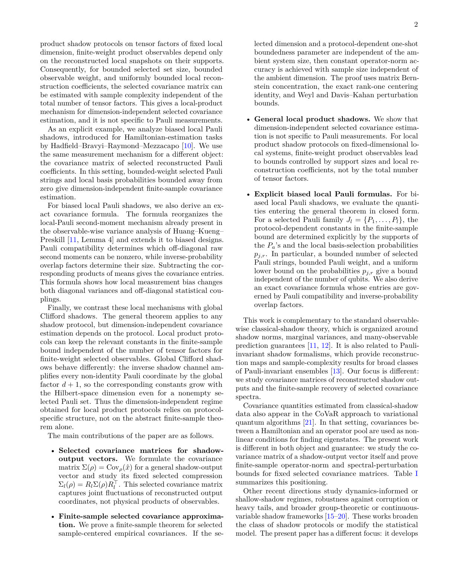
<figcaption class="paper-figure-caption"><b>Fig 1.</b> Low-resolution page preview, page 2</figcaption>
</figure>
<figure class="paper-figure-card">
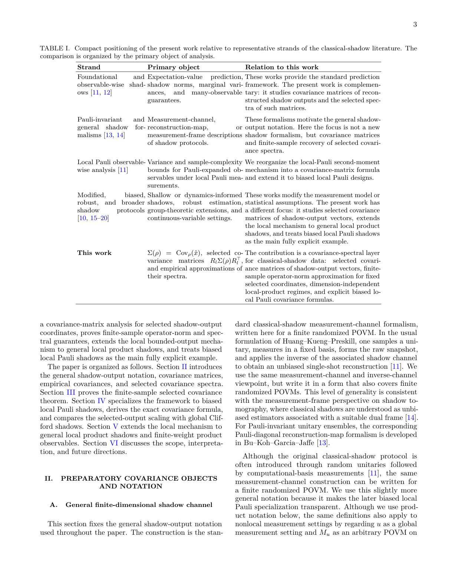
<figcaption class="paper-figure-caption"><b>Fig 2.</b> Low-resolution page preview, page 3</figcaption>
</figure>
<figure class="paper-figure-card">
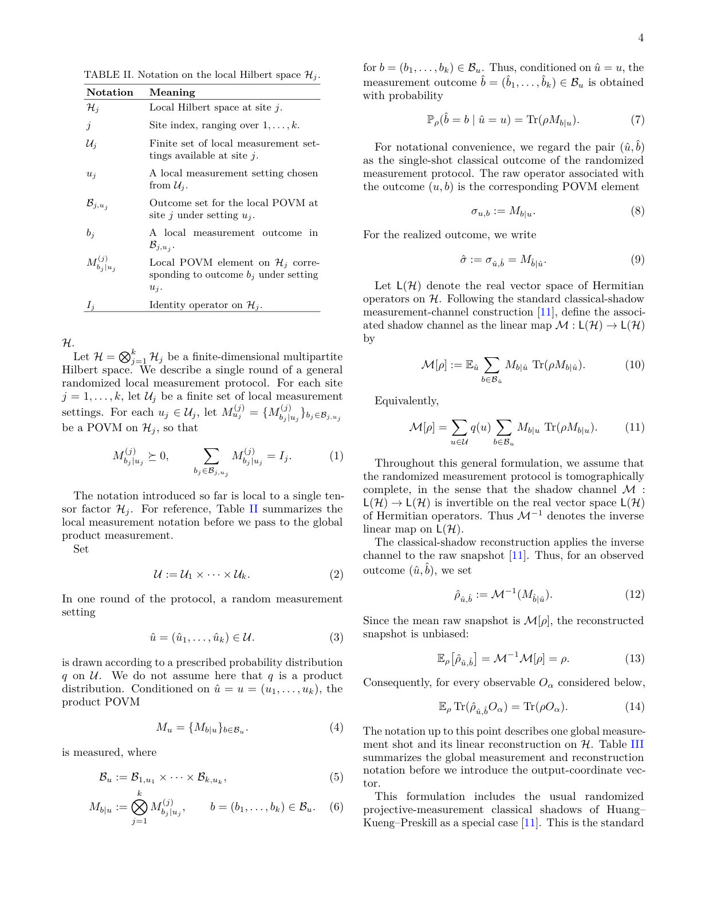
<figcaption class="paper-figure-caption"><b>Fig 3.</b> Low-resolution page preview, page 4</figcaption>
</figure>
<figure class="paper-figure-card">
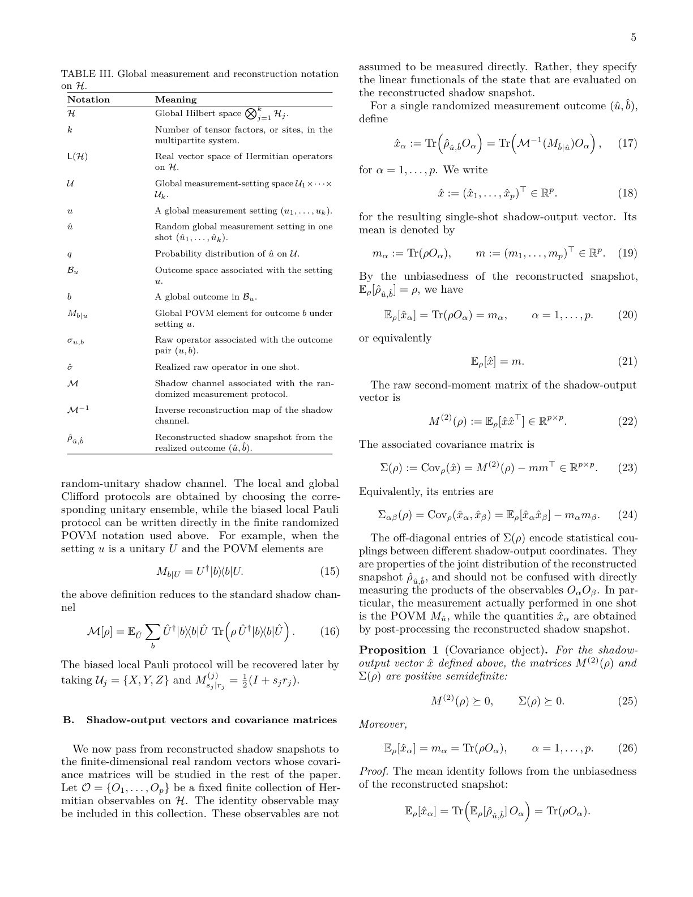
<figcaption class="paper-figure-caption"><b>Fig 4.</b> Low-resolution page preview, page 5</figcaption>
</figure>
<figure class="paper-figure-card">
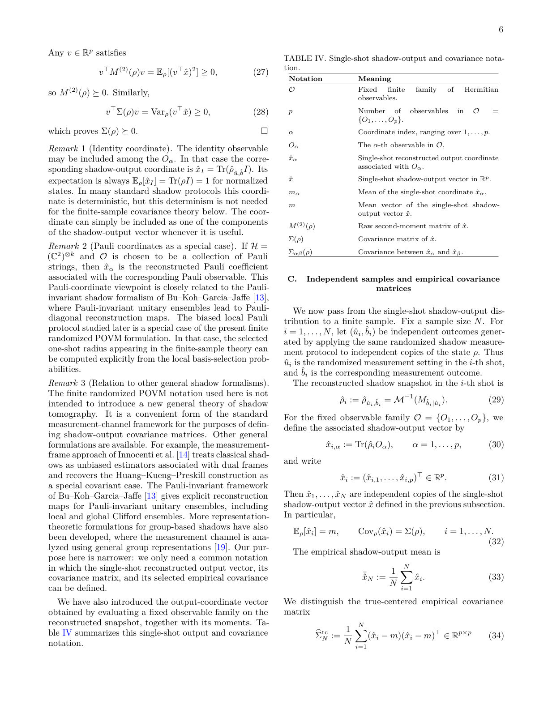
<figcaption class="paper-figure-caption"><b>Fig 5.</b> Low-resolution page preview, page 6</figcaption>
</figure>
</div>

<p><strong>Summary.</strong> This paper develops a rigorous finite-sample theory for estimating the covariance spectrum of quantum measurements reconstructed via classical shadows. It proves that for local measurement settings, the required sample size to estimate the selected covariance is independent of the total system dimension. This is a significant result for quantum tomography, as it shows that local structure can overcome the curse of dimensionality.</p>
<p><strong>Why it may be interesting.</strong> It provides rigorous, quantitative tools for characterizing the statistical information contained in quantum measurements (shadows), which is crucial for understanding the limits of quantum state reconstruction.</p>
<details>
<summary>Detailed structure</summary>
<p><strong>Main problem.</strong> The paper addresses the finite-sample estimation of selected covariance matrices derived from classical-shadow outputs in quantum measurements.</p>
<p><strong>Main result.</strong> It establishes dimension-independent sample size bounds for selected covariance estimation when the measurement protocol is local (e.g., local Pauli shadows), contrasting this with protocols where the required sample size scales with system dimension.</p>
<p><strong>Method.</strong> The analysis combines matrix Bernstein concentration inequalities with exact rank-one centering identities to control the error in the sample-centered empirical covariance matrix.</p>
<p><strong>Model / system.</strong> The study uses the framework of classical shadows, where quantum state tomography is approximated by measuring a set of observables (Pauli strings) and reconstructing a shadow snapshot. The system is analyzed in terms of local product measurements versus global measurements.</p>
<p><strong>Key observables.</strong> Selected covariance matrix ($\Sigma_l(
ho)$), shadow-output vector ($\hat{x}$), and the selected one-shot radius ($B_l$).</p>
<p><strong>Important parameters / regimes.</strong> The selected dimension ($l$), the local support sizes, and the local reconstruction coefficients are critical parameters determining the sample complexity.</p>
<p><strong>Assumptions / limitations.</strong> The primary assumption for the dimension-independent result is that the selected set of observables (or their associated coefficients) is bounded and local in nature (e.g., local product shadows).</p>
<p><strong>Figures summary.</strong> The notes mention TABLE I comparing the work to other literature strands and TABLE II/III defining notation for local/global measurements, but no specific figure content is detailed.</p>
<p><strong>Paper structure.</strong> The paper develops the theory by first defining the shadow-output vector and covariance, then proving the general finite-sample theorem, specializing to local product shadows, and finally deriving explicit, dimension-independent covariance formulas for biased local Pauli shadows.</p>
</details>
<details>
<summary>Abstract</summary>
<p>We study finite-sample estimation of selected covariance matrices of classical-shadow outputs. For a general shadow-output vector, we consider its covariance matrix and a fixed selected compression. Our main theorem applies to arbitrary shadow protocols and gives an operator-norm error bound for the selected sample-centered empirical covariance. When the protocol-dependent constants appearing in this bound remain independent of the ambient system size, the required sample size is also independent of the ambient dimension. The proof combines matrix Bernstein concentration, an exact rank-one centering identity, and Weyl and Davis--Kahan perturbation bounds.   We verify this bounded-output condition for local measurement settings. For general local product shadow protocols with fixed local dimension, finite-weight product observables lead to bounds controlled by support sizes and local reconstruction coefficients, not by the total number of tensor factors. Hence uniform bounds on selected set size, observable weight, and local reconstruction coefficients imply dimension-independent selected covariance estimation.   For biased local Pauli shadows, we evaluate the relevant bound in closed form from the selected Pauli supports and local basis-selection probabilities. We also derive an exact covariance formula governed by Pauli compatibility and inverse-probability overlap factors, showing how measurement bias affects both diagonal variances and off-diagonal statistical couplings. A comparison with global Clifford shadows shows that this dimension-independent local behavior is not automatic for every shadow protocol.</p>
</details>
<p><sub><a href="#top">↑ back to top</a></sub></p>

<p><a id="paper-2606.02399"></a></p>
<h3 id="optical-stability-and-photophysics-of-nv-centers-in-diamond-up-to-120-gpa"><a href="http://arxiv.org/abs/2606.02399v1">Optical Stability and Photophysics of NV Centers in Diamond up to 120 GPa</a></h3>
<p><strong>Authors:</strong> Kin On Ho, Cassandra Dailledouze, Vytautas Žalandauskas, Grégoire Le Caruyer, Marek Maciaszek, Claire Roussy, Marie-Pierre Adam, Martin Schmidt, Loïc Toraille, Paul Loubeyre, Lukas Razinkovas, Jean-François Roch<br>
<strong>Type:</strong> both · <strong>Category:</strong> other · <strong>PDF:</strong> <a href="https://arxiv.org/pdf/2606.02399v1">https://arxiv.org/pdf/2606.02399v1</a><br>
<strong>Analysis basis:</strong> full PDF text, analyzed in chunks
<strong>Topic relevance:</strong> <code>spintronics-quantum-optics interface</code> <strong>3/5</strong> · <code>QC/QI experiment</code> <strong>1/5</strong></p>
<div class="figure-strip-hint">↔ Scroll figures horizontally</div>
<div class="paper-figures-scroll">
<figure class="paper-figure-card">
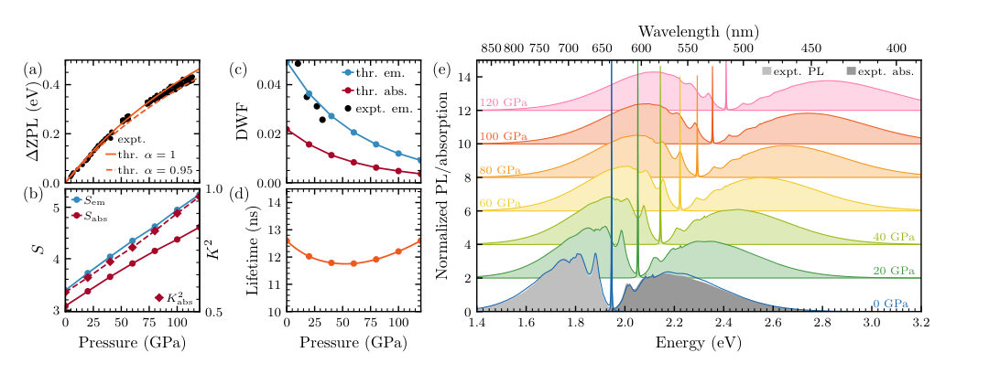
<figcaption class="paper-figure-caption"><b>Fig 1.</b> FIG. 1. (a) ZPL shift relative to ambient pressure. Black circles: experiment; orange solid line: theory (hydrostatic); orange dashed line: theory with near-hydrostaticity stress (α = 0.95). (b) Pressure-induced evolution of electron–phonon coupling parameters. Blue solid line: total HR factor S (emission); red solid line: HR factor for JT-inactive modes (absorption); red dashed line: squared vibronic coupling constants K2. (c) Pressure-induced evolution of Debye–Waller factors (DWF). Blue solid line: emission (theory); red solid line: absorption (theory); black circles: emission (experimental). (d) Pressure-induced evolution of theoretical radiative lifetime. (e) Theoretical PL and...</figcaption>
</figure>
<figure class="paper-figure-card">
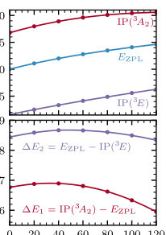
<figcaption class="paper-figure-caption"><b>Fig 2.</b> FIG. 2. (a) Photoionization of NV−from 3A2 and 3E states leading to 2E and 4A2 of NV0. (b) Pressure evolution of ion- ization thresholds IP(3A2) and IP(3E) alongside with ZPL. (c) Ionization energies relative to ZPL.</figcaption>
</figure>
<figure class="paper-figure-card">
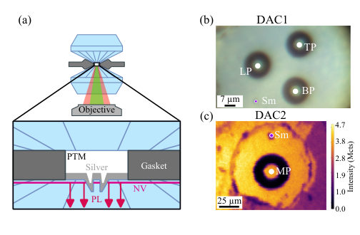
<figcaption class="paper-figure-caption"><b>Fig 3.</b> FIG. 3. (a) Illustration of the DAC with a micropillar struc- ture on (100)-diamond for reaching near-hydrostatic pres- sures [16]. We silver-coat the tip of the NV-implanted anvil to avoid interference from the top anvil and increase signal collection. (b) Image of DAC1 with three micropillars. (c) Confocal image of DAC2 with a single micropillar.</figcaption>
</figure>
<figure class="paper-figure-card">
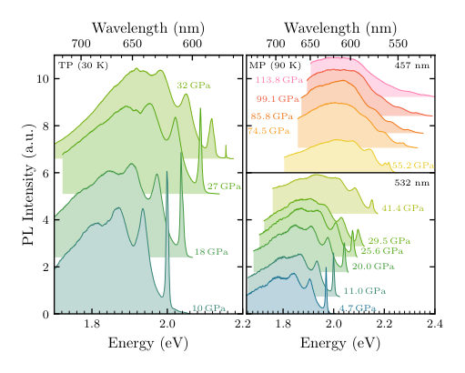
<figcaption class="paper-figure-caption"><b>Fig 4.</b> FIG. 4. Pressure evolution of the experimental NV PL spec- tra. (Left) Measurements from the TP micropillar at 30 K using 532 nm excitation. (Right) Measurements from the MP micropillar at ≈90 K: bottom panel – 532 nm excitation; top panel – 457 nm excitation. Spectra in each panel are verti- cally offset by pressure-dependent scaling factors.</figcaption>
</figure>
<figure class="paper-figure-card">
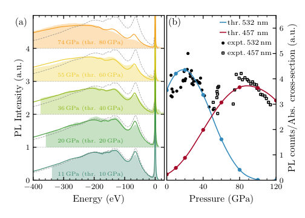
<figcaption class="paper-figure-caption"><b>Fig 5.</b> FIG. 5. (a) Comparison between experimental and theoreti- cal PSBs at approximately 10, 20, 40, 60, and 80 GPa. Solid lines and shaded areas represent calculations and experimen- tal results. Dashed lines indicate the ambient-pressure ref- erence. (b) PL photon yield (arbitrary units) as a function of pressure for excitation at 532 nm and 457 nm. Solid and open markers show the corresponding integrated experimen- tal PL intensities, while solid blue and red lines represent the pressure-dependent absorption cross sections (arbitrary units) sampled at 532 and 457 nm from theory.</figcaption>
</figure>
</div>

<p><strong>Summary.</strong> This research thoroughly investigates how the optical properties of NV centers in diamond change under extreme hydrostatic pressures up to 120 GPa. By combining advanced DFT calculations with DAC experiments, the authors demonstrate that the NV center remains a robust quantum sensor. The findings provide critical spectroscopic guidelines for utilizing NV centers in high-pressure quantum sensing applications.</p>
<p><strong>Why it may be interesting.</strong> This work is highly relevant as it addresses the stability of a solid-state quantum emitter (NV center) under extreme conditions, which is crucial for developing quantum sensors for high-pressure physics.</p>
<details>
<summary>Detailed structure</summary>
<p><strong>Main problem.</strong> To investigate the optical properties and stability of the Nitrogen Vacancy (NV) center in diamond under extreme hydrostatic pressures up to 120 GPa to optimize its use as a quantum sensor.</p>
<p><strong>Main result.</strong> The NV center remains a robust quantum sensor under extreme hydrostatic pressures, maintaining stable quantum efficiency for optical readout, despite enhanced electron-phonon coupling.</p>
<p><strong>Method.</strong> The study combines theoretical calculations using DFT (HSE06, r2SCAN) with experimental measurements performed in a Diamond Anvil Cell (DAC) setup.</p>
<p><strong>Model / system.</strong> The physical system is the negatively charged nitrogen vacancy (NV-) center in diamond. The analysis models its electronic structure, optical transitions (ZPL, PSB), and photoionization pathways under varying hydrostatic pressures.</p>
<p><strong>Key observables.</strong> Zero-Phonon Line (ZPL) position shift, radiative lifetimes, optical lineshapes, photoionization thresholds, and electron-phonon coupling parameters (HR factor, $K_2$).</p>
<p><strong>Important parameters / regimes.</strong> Pressures up to 120 GPa; ZPL shift exceeding 400 meV at 120 GPa.</p>
<p><strong>Assumptions / limitations.</strong> The analysis assumes near-hydrostatic conditions for comprehensive study, and theoretical modeling uses approximations like adiabatic Huang-Rhys theory for emission.</p>
<p><strong>Figures summary.</strong> Figures illustrate the pressure dependence of ZPL shifts, electron-phonon coupling parameters, PL/absorption lineshapes, and photoionization thresholds up to 120 GPa.</p>
<p><strong>Paper structure.</strong> The paper systematically investigates the pressure dependence of various optical parameters, comparing theoretical predictions (DFT calculations) with experimental results obtained using a DAC setup, culminating in guidelines for high-pressure optical measurements.</p>
</details>
<details>
<summary>Abstract</summary>
<p>The nitrogen vacancy (NV) center has emerged as a powerful quantum sensor in high-pressure research, with the observation of optically detected magnetic resonance at megabar pressures. However, some aspects of NV physics require further investigation to optimize the development of NV-based sensing under pressure. Here, we study both experimentally and theoretically the optical properties of the NV center under hydrostatic pressure. We investigate the evolution of the zero-phonon line (ZPL) position, radiative lifetimes, optical lineshapes, and photoionization thresholds of the NV center under pressures up to ~120 GPa. We also provide spectroscopic guidelines for performing high-pressure optical experiments. Our results confirm that the NV center remains a robust quantum sensor under extreme hydrostatic pressures, especially for magnetic characterization.</p>
</details>
<p><sub><a href="#top">↑ back to top</a></sub></p>

<p><a id="paper-2606.01953"></a></p>
<h3 id="quantum-resonance-encryption-for-secure-data-storage-and-communication-with-quantum-kicked-top"><a href="http://arxiv.org/abs/2606.01953v1">Quantum resonance encryption for secure data storage and communication with quantum kicked top</a></h3>
<p><strong>Authors:</strong> Sreeram PG, M. S. Santhanam<br>
<strong>Type:</strong> theory · <strong>Category:</strong> quantum information and computing · <strong>PDF:</strong> <a href="https://arxiv.org/pdf/2606.01953v1">https://arxiv.org/pdf/2606.01953v1</a><br>
<strong>Analysis basis:</strong> full PDF text, analyzed in chunks
<strong>Topic relevance:</strong> <code>non-equilibrium dynamics</code> <strong>3/5</strong> · <code>entanglement &amp; information structure</code> <strong>1/5</strong></p>
<div class="figure-strip-hint">↔ Scroll figures horizontally</div>
<div class="paper-figures-scroll">
<figure class="paper-figure-card">
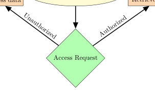
<figcaption class="paper-figure-caption"><b>Fig 1.</b> FIG. 1: Quantum secret storage and access protocol</figcaption>
</figure>
<figure class="paper-figure-card">
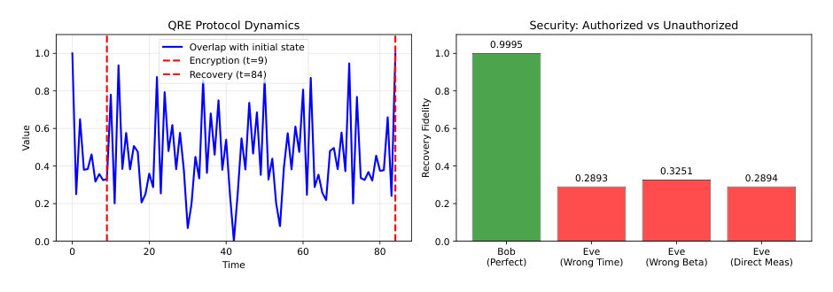
<figcaption class="paper-figure-caption"><b>Fig 2.</b> FIG. 2: Security demonstration of a four qubit encryption. Left figure shows the fidelity recurrence of the evolved state with respect to the initial state at resonance. Alice chooses the first and the third qubits to carry message; thus the bitmask is 1010 which is 10 in decimal. Alice also sets the parameter s = 3, K = 100 and saves the evolved state at thide = 9. Therefore, r = 10 × 100 + 9 = 1009. Eve, who is unauthorized to access the message/data cannot recover it without knowing message qubits, β, s, and the rule for encoding bitmask and thide in β. Any attempts by Eve without knowing all of them does not compromise data security, as the right figure shows. Fidelities marked ‘Wrong...</figcaption>
</figure>
<figure class="paper-figure-card">
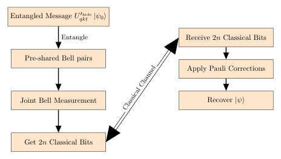
<figcaption class="paper-figure-caption"><b>Fig 3.</b> FIG. 3: Communication using quantum resonance en- cryption</figcaption>
</figure>
<figure class="paper-figure-card">
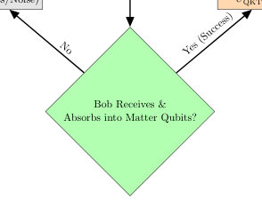
<figcaption class="paper-figure-caption"><b>Fig 4.</b> FIG. 4: Direct transmission of the message using a quan- tum channel.</figcaption>
</figure>
</div>

<p><strong>Summary.</strong> This paper introduces Quantum Resonance Encryption (QRE), a novel protocol for securing data in shared quantum computers. It leverages the unique, non-classical dynamics of the quantum kicked top system to scramble information. The method ensures that only authorized parties, knowing the precise resonance parameters, can recover the original data, offering robust security against eavesdropping.</p>
<p><strong>Why it may be interesting.</strong> The application of quantum chaos and resonance dynamics from a physical model (kicked top) to solve a fundamental problem in quantum information security (QKD/data storage) is highly relevant for theoretical physicists studying open quantum systems and quantum computation.</p>
<details>
<summary>Detailed structure</summary>
<p><strong>Main problem.</strong> The paper addresses the critical need for ensuring data privacy and secure communication within shared quantum computing environments, protecting data even from the service provider.</p>
<p><strong>Main result.</strong> A Quantum Resonance Encryption (QRE) protocol is proposed that uses quantum kicked top dynamics to scramble data, ensuring perfect recovery for authorized users while rendering intercepted states mixed to eavesdroppers.</p>
<p><strong>Method.</strong> The protocol involves encoding the secret state, scrambling it using the unitary evolution of the quantum kicked top ($U_{QKT}$), and then requiring a specific recovery unitary based on the system's quantum resonance period.</p>
<p><strong>Model / system.</strong> The core physical model is the quantum kicked top, whose dynamics are governed by a Floquet operator. This system is used to generate the necessary unitary transformations for encryption and decryption.</p>
<p><strong>Key observables.</strong> Fidelity recurrence (comparing perfect recovery vs. wrong time/wrong parameters), and the measurement outcome of ancillary qubits for tampering detection.</p>
<p><strong>Important parameters / regimes.</strong> The resonance condition $eta = 4\pi j r / s$ is crucial for ensuring periodic dynamics ($U_{QKT}^T = I$).</p>
<p><strong>Assumptions / limitations.</strong> The protocol assumes the availability of quantum memory and functioning quantum networks, though it can be demonstrated on current platforms.</p>
<p><strong>Figures summary.</strong> Figures illustrate the schematic flow of the QRE protocol (Encode $
ightarrow$ Conceal $
ightarrow$ Store $
ightarrow$ Retrieve), security demonstrations via fidelity recurrence, and the extension to long-distance communication using multi-qubit teleportation.</p>
<p><strong>Paper structure.</strong> The paper introduces the problem, details the QRE protocol using the quantum kicked top, demonstrates its security against eavesdropping, and extends the concept to multi-qubit teleportation for long-distance communication and QKD.</p>
</details>
<details>
<summary>Abstract</summary>
<p>In a shared quantum computer, how to ensure data privacy and protection from access by unauthorized parties? We propose a genuine quantum protocol for protecting user's data which is not accessible even to the service provider. The protocol is based on quantum kicked top -- the dynamics of a spin system --operating at quantum resonance regime. This protocol ensures perfect recovery for authorized users while making intercepted states appear mixed to eavesdroppers, with built-in tampering detection. This protocol can also be used for secure communication between two parties in geographically different locations, and also for quantum key distribution. The effectiveness of this protocol is demonstrated by assuming a quantum computer with quantum memory and functioning quantum networks. In the absence of the latter, at present, the protocol can be demonstrated in laboratory using currently available quantum computing platforms.</p>
</details>
<p><sub><a href="#top">↑ back to top</a></sub></p>

<p><a id="paper-2606.02169"></a></p>
<h3 id="spin-hamiltonian-as-matrix-free-linear-map"><a href="http://arxiv.org/abs/2606.02169v1">Spin Hamiltonian as Matrix-Free Linear Map</a></h3>
<p><strong>Authors:</strong> Aditya Dev<br>
<strong>Type:</strong> theory · <strong>Category:</strong> numerical methods · <strong>PDF:</strong> <a href="https://arxiv.org/pdf/2606.02169v1">https://arxiv.org/pdf/2606.02169v1</a><br>
<strong>Analysis basis:</strong> full PDF text, analyzed in chunks
<strong>Topic relevance:</strong> <code>analog quantum simulation</code> <strong>3/5</strong> · <code>methods for driven-dissipative</code> <strong>1/5</strong></p>
<div class="figure-strip-hint">↔ Scroll figures horizontally</div>
<div class="paper-figures-scroll">
<figure class="paper-figure-card">
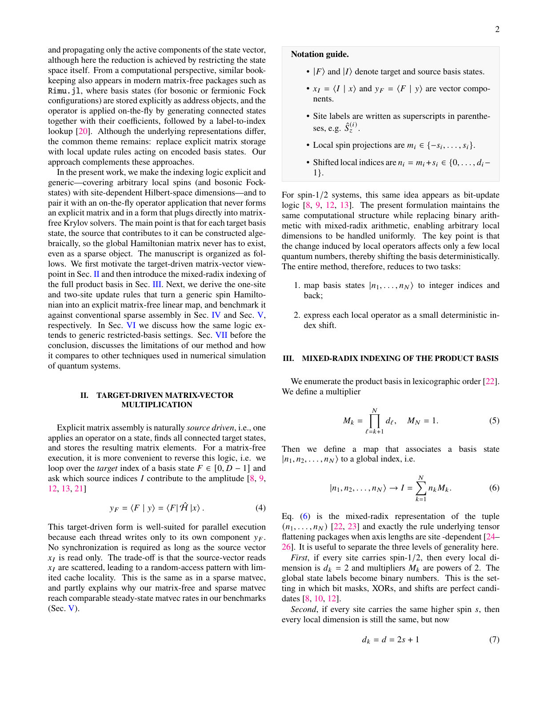
<figcaption class="paper-figure-caption"><b>Fig 1.</b> Low-resolution page preview, page 2</figcaption>
</figure>
<figure class="paper-figure-card">
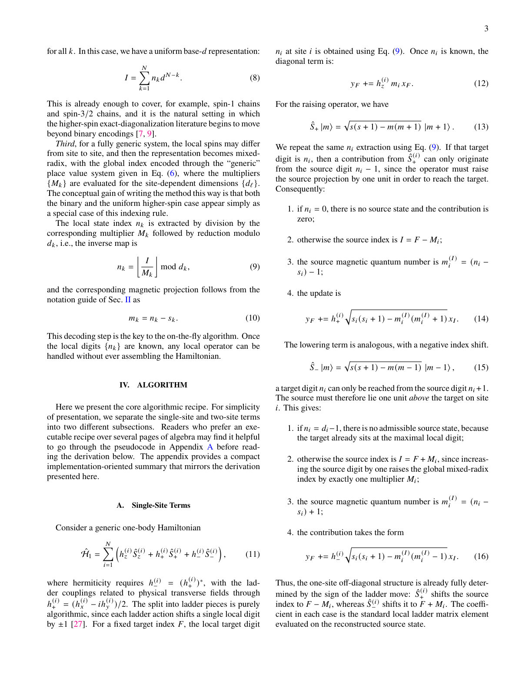
<figcaption class="paper-figure-caption"><b>Fig 2.</b> Low-resolution page preview, page 3</figcaption>
</figure>
<figure class="paper-figure-card">
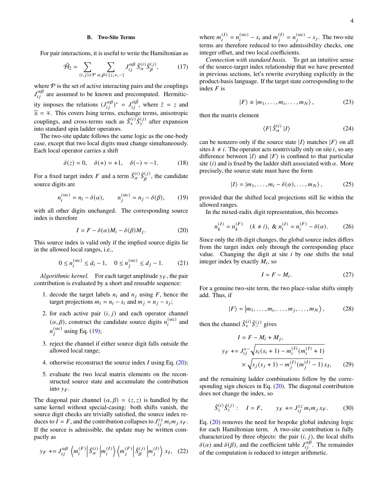
<figcaption class="paper-figure-caption"><b>Fig 3.</b> Low-resolution page preview, page 4</figcaption>
</figure>
<figure class="paper-figure-card">
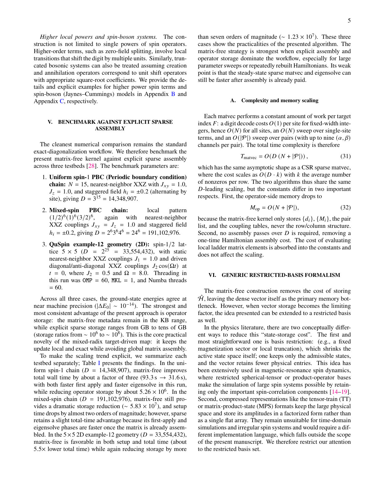
<figcaption class="paper-figure-caption"><b>Fig 4.</b> Low-resolution page preview, page 5</figcaption>
</figure>
<figure class="paper-figure-card">
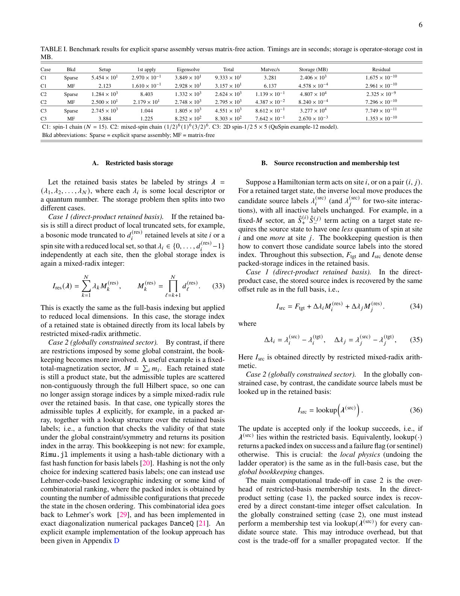
<figcaption class="paper-figure-caption"><b>Fig 5.</b> Low-resolution page preview, page 6</figcaption>
</figure>
</div>

<p><strong>Summary.</strong> This paper introduces a highly efficient, matrix-free algorithm to compute the action of a spin Hamiltonian on a quantum state vector. By using mixed-radix indexing, it avoids the massive memory overhead of explicitly assembling the Hamiltonian matrix. This makes simulating large, complex quantum spin systems feasible for workflows requiring frequent Hamiltonian updates.</p>
<p><strong>Why it may be interesting.</strong> This is highly relevant as it provides a general, scalable computational backbone for simulating complex Hamiltonians in AMO physics, especially when the Hamiltonian structure changes frequently (e.g., parameter sweeps).</p>
<details>
<summary>Detailed structure</summary>
<p><strong>Main problem.</strong> The primary challenge is overcoming the memory limitations associated with explicitly assembling the Hamiltonian matrix for simulating large quantum many-body systems.</p>
<p><strong>Main result.</strong> The authors present a generic, memory-conserving algorithm to compute the action of the Hamiltonian on a state vector entirely on the fly, avoiding explicit matrix storage.</p>
<p><strong>Method.</strong> The method utilizes a mixed-radix indexing scheme for the full tensor-product basis, translating local spin operations into simple integer offsets to perform the matrix-vector product.</p>
<p><strong>Model / system.</strong> The framework applies to quantum many-body systems on arbitrary spin lattices, handling local spin operators ($\hat{S}$) and allowing for mixed-spin or bosonic degrees of freedom.</p>
<p><strong>Key observables.</strong> The core operation is the matrix-vector product $\hat{H}|\mathbf{x}
angle$; key diagnostics include computational time and operator memory scaling.</p>
<p><strong>Important parameters / regimes.</strong> The method's efficiency is measured against the system dimension $D$ and the number of local interactions ($N+|P|$).</p>
<p><strong>Assumptions / limitations.</strong> The method assumes the state vector itself can be stored (the state vector bottleneck) and that the required index arithmetic is feasible within hardware word limits.</p>
<p><strong>Figures summary.</strong> The notes reference a comparison (Table I) showing the superior storage scaling of the matrix-free method versus explicit sparse assembly as system dimension grows.</p>
<p><strong>Paper structure.</strong> The paper develops the mixed-radix indexing logic, details the target-driven approach for calculating matrix elements, and provides pseudocode for the matrix-free matrix-vector product ($    ext{MATVEC!}$).</p>
</details>
<details>
<summary>Abstract</summary>
<p>We present an algorithm that computes the action of a generic spin Hamiltonian on a state vector on the fly, entirely avoiding explicit matrix assembly. This is achieved through mixed-radix indexing of the full tensor-product basis, which translates local spin operations into simple integer offsets. The result is an explicit framework for evaluating single- and two-site terms across arbitrary spin lattices, including mixed-spin systems. Our construction bridges the basis-indexing logic familiar from exact diagonalization with the matrix-free state-update philosophy of address-based frameworks. By writing the indexing logic in closed form, a single uniform loop applies to every site regardless of its local Hilbert-space dimension. The method is parallelizable and memory-conserving, and can be extended to restricted basis or truncated bosonic levels.</p>
</details>
<p><sub><a href="#top">↑ back to top</a></sub></p>

<p><a id="paper-2606.00473"></a></p>
<h3 id="accelerating-surface-radiation-content-to-investigate-the-impact-of-radon-progeny-on-superconducting-qubits"><a href="http://arxiv.org/abs/2606.00473v1">Accelerating Surface Radiation Content to Investigate the Impact of Radon Progeny on Superconducting Qubits</a></h3>
<p><strong>Authors:</strong> Sagar S. Poudel, Dylan J. Temples, Ryan Linehan, Alejandro Rodriguez, Matthew Hall, Dax Kay, Nathaniel Rodenburg, Daniel Baxter, Enectali Figueroa-Feliciano, Richard W. Schnee, Lauren Hsu<br>
<strong>Type:</strong> both · <strong>Category:</strong> quantum information and computing · <strong>PDF:</strong> <a href="https://arxiv.org/pdf/2606.00473v1">https://arxiv.org/pdf/2606.00473v1</a><br>
<strong>Analysis basis:</strong> full PDF text, analyzed in chunks
<strong>Topic relevance:</strong> <code>QC/QI experiment</code> <strong>3/5</strong></p>
<div class="figure-strip-hint">↔ Scroll figures horizontally</div>
<div class="paper-figures-scroll">
<figure class="paper-figure-card">
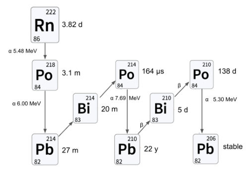
<figcaption class="paper-figure-caption"><b>Fig 1.</b> FIG. 1: 222Rn decay chain. Only prominent α decays (vertical arrows) are shown. β decays are indicated by the upward-pointing diagonal arrows.</figcaption>
</figure>
<figure class="paper-figure-card">
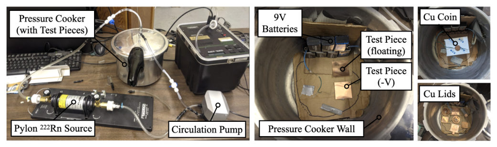
<figcaption class="paper-figure-caption"><b>Fig 2.</b> FIG. 2: Left: The radon exposure apparatus showing the flow-through 222Rn pylon source and circulation pump that drives the gas into the pressure vessel (exposure chamber). The radon concentration is measured with the Rad7 radon detector. Right: Internal images of the pressure vessel showing exposure configurations for various work pieces. The cardboard provides insulation from chassis ground, enabling the at-field plate-out.</figcaption>
</figure>
<figure class="paper-figure-card">
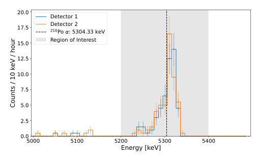
<figcaption class="paper-figure-caption"><b>Fig 3.</b> FIG. 3: 210Po alpha spectrum for the same copper sample measured in the two detectors of the Alpha Duo. In both cases, the top surface of the strip was 4 mm away from the detectors. These data were acquired two hours apart, so the grow-in of 210Po during measurements is minimal.</figcaption>
</figure>
<figure class="paper-figure-card">
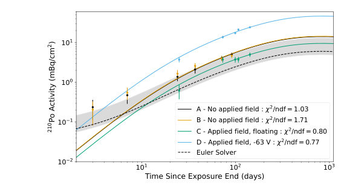
<figcaption class="paper-figure-caption"><b>Fig 4.</b> FIG. 4: Measurements of total surface activity (per sq. cm) of Cu Foils “A”, “B”, “C”, and “D”. Each pair (A &amp; B and C &amp; D) was placed in the radon exposure ves- sel separately for 7 days. All solid curves are best fits to the simplified Bateman Equation (Eq. C29), in which the only free parameter is the initial activity of 210Pb, and the initial surface activities of 210Bi and 210Po are fixed to be zero. Also shown is a forward-Euler solution to Eqs. C4 and C5 (black dashed), modified to allow for a decaying 222Rn concentration, for a 7-day exposure (with ρA = 7.3 MBq/m3 and A/V = 38.2 m−1) which qualita- tively captures the early time behavior (seen in A and B), whereas the simplified...</figcaption>
</figure>
<figure class="paper-figure-card">
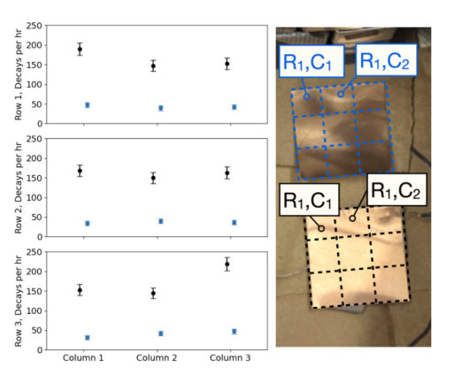
<figcaption class="paper-figure-caption"><b>Fig 5.</b> FIG. 5: Left: Rates of the nine sub-squares of Foil C (floating, blue) and Foil D (-63 V, black), demonstrat- ing uniformity of plateout across both. Right: Diagram showing orientation and clocking of the rows and columns referenced in the plots on the left.</figcaption>
</figure>
</div>

<p><strong>Summary.</strong> This paper quantifies the threat posed by radon progeny contamination to superconducting qubits. By developing an enhanced experimental setup, the authors measure the accumulation of radioactive daughters on surfaces. The findings establish that this environmental source of ionizing radiation must be accounted for when scaling quantum computing architectures.</p>
<p><strong>Why it may be interesting.</strong> The work directly addresses environmental noise sources that limit the scalability of quantum processors, providing critical dosimetry data for hardware engineers designing radiation-hard quantum systems.</p>
<details>
<summary>Detailed structure</summary>
<p><strong>Main problem.</strong> The paper investigates how long-lived, unstable daughters of Radon-222, which plate out on device surfaces, induce decoherence in superconducting qubits.</p>
<p><strong>Main result.</strong> The authors demonstrate that radon progeny plate-out can create a significant, localized source of ionizing radiation, potentially dominating the background noise, especially in shielded or underground environments.</p>
<p><strong>Method.</strong> The study combines experimental measurements using enhanced radon exposure setups with theoretical modeling (e.g., solving coupled differential equations) and particle simulations (Geant4) to quantify surface contamination and resulting energy depositions.</p>
<p><strong>Model / system.</strong> The physical system is a superconducting qubit device. The contamination source is modeled by the decay chain of Radon-222 progeny, which plate out on surfaces over time, creating a quasi-permanent source of alpha-decaying isotopes like Po-210.</p>
<p><strong>Key observables.</strong> Surface activity density of Po-210 ($A_{3y}$), event rates from $   ext{Rn}$ progeny vs. cosmic rays, and the resulting crystalline defects (Frenkel defects).</p>
<p><strong>Important parameters / regimes.</strong> Plate-out enhancement factor ($7 	imes 10^4$), ambient radon concentrations ($ ext{Bq/m}^3$), and the time delay for measurement (3 years).</p>
<p><strong>Assumptions / limitations.</strong> The dead-air model is used for background calculation, and the study assumes that the $\alpha$ decay of Po-210 is the most disruptive component to qubit coherence.</p>
<p><strong>Figures summary.</strong> Figures illustrate the radon decay chain, the experimental apparatus, the spatial uniformity of plate-out, and the time evolution of the calculated Po-210 activity density for both ambient and enhanced exposure scenarios.</p>
<p><strong>Paper structure.</strong> The paper progresses from identifying the problem (radon plate-out) to presenting an enhanced experimental setup for measurement, developing mathematical models for time-dependent deposition, and finally quantifying the resulting background radiation rates relevant to qubit operation.</p>
</details>
<details>
<summary>Abstract</summary>
<p>Ionizing radiation in the form of $α$, $β$, $γ$, and additional high-energy particles can induce decoherence via phonon and quasiparticle poisoning in superconducting qubits. Recent studies have explored this effect using cosmic rays or controlled radioactive sources held in the proximity of a qubit package, and have concluded that reductions in such <code>external'' environmental radiation may benefit stable operation of qubit devices. However, the effect of long-lived, unstable daughters of $^{222}$Rn that</code>plate out'' directly on device and packaging surfaces has not been as extensively explored. This plate-out process, well-known to the dark matter direct detection field, occurs throughout the fabrication and testing lifecycle of a device and (separately) its packaging, and produces a local source of $α$-decays which can remain active for decades. As this scales with chip area, understanding and managing this source of ionizing radiation is relevant for successfully scaling quantum computing architectures to larger numbers of qubits in a radiation-robust way. We present a setup capable of accelerating and enhancing radon daughter plateout by a factor of $7\times10^4$ over ambient, in order to study, \textit{in situ}, the impact of these events on superconducting qubits. We also provide outlook on the potential impact of this source of ionizing radiation on current and future qubit arrays.</p>
</details>
<p><sub><a href="#top">↑ back to top</a></sub></p>

<p><a id="paper-2606.01943"></a></p>
<h3 id="an-explicit-scott-type-bound-for-absolutely-maximally-entangled-states-with-arbitrary-defect"><a href="http://arxiv.org/abs/2606.01943v1">An Explicit Scott-Type Bound for Absolutely Maximally Entangled States with Arbitrary Defect</a></h3>
<p><strong>Authors:</strong> Shixuan Zeng, Xiande Zhang<br>
<strong>Type:</strong> theory · <strong>Category:</strong> quantum information and computing · <strong>PDF:</strong> <a href="https://arxiv.org/pdf/2606.01943v1">https://arxiv.org/pdf/2606.01943v1</a><br>
<strong>Analysis basis:</strong> full PDF text, analyzed in chunks
<strong>Topic relevance:</strong> <code>entanglement &amp; information structure</code> <strong>3/5</strong></p>
<div class="figure-strip-hint">↔ Scroll figures horizontally</div>
<div class="paper-figures-scroll">
<figure class="paper-figure-card">
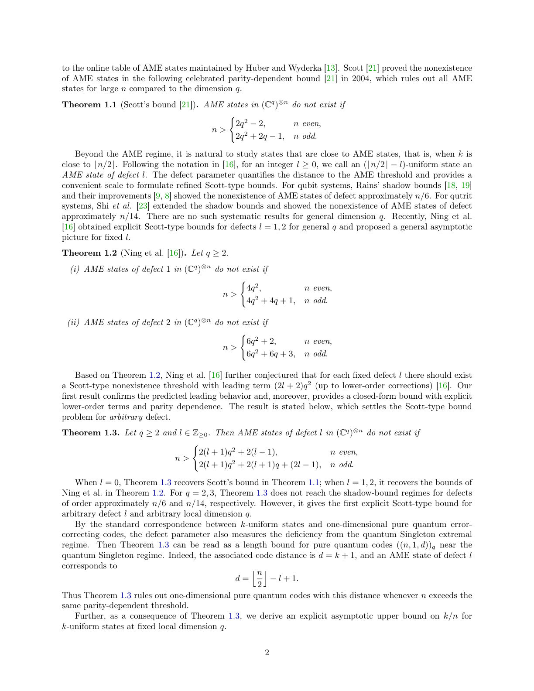
<figcaption class="paper-figure-caption"><b>Fig 1.</b> Low-resolution page preview, page 2</figcaption>
</figure>
<figure class="paper-figure-card">
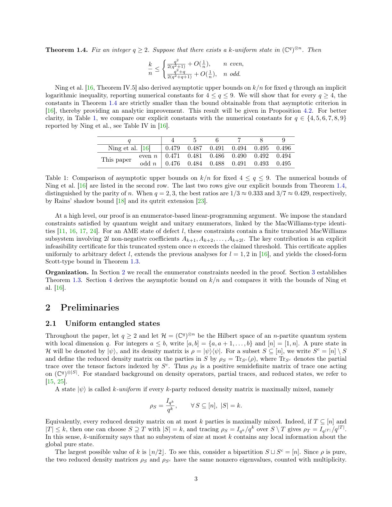
<figcaption class="paper-figure-caption"><b>Fig 2.</b> Low-resolution page preview, page 3</figcaption>
</figure>
<figure class="paper-figure-card">
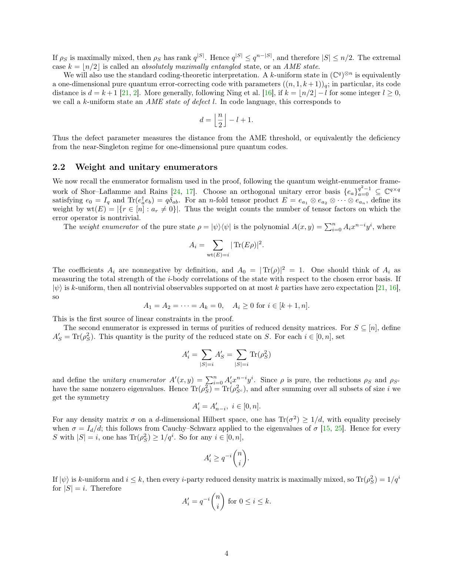
<figcaption class="paper-figure-caption"><b>Fig 3.</b> Low-resolution page preview, page 4</figcaption>
</figure>
<figure class="paper-figure-card">
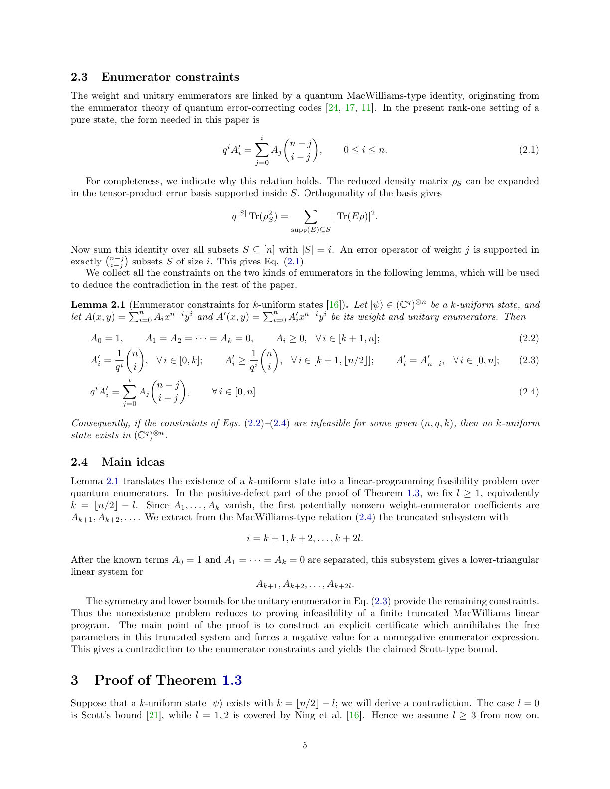
<figcaption class="paper-figure-caption"><b>Fig 4.</b> Low-resolution page preview, page 5</figcaption>
</figure>
<figure class="paper-figure-card">
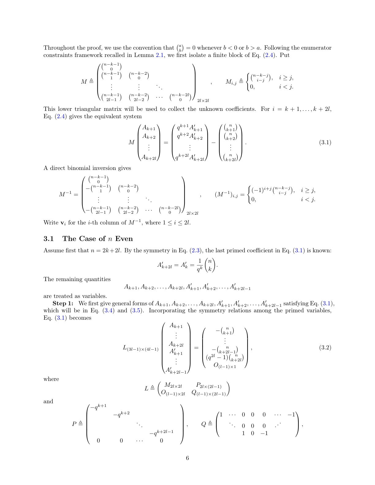
<figcaption class="paper-figure-caption"><b>Fig 5.</b> Low-resolution page preview, page 6</figcaption>
</figure>
</div>

<p><strong>Summary.</strong> This paper establishes a comprehensive and explicit Scott-type upper bound for the existence of highly entangled quantum states (AME states) with an arbitrary defect $l$. By employing advanced techniques involving linear programming on quantum enumerators, the authors provide a general nonexistence criterion, significantly improving previous results and yielding explicit asymptotic bounds on the entanglement ratio $k/n$.</p>
<p><strong>Why it may be interesting.</strong> This work provides deep mathematical constraints on the structure of highly entangled quantum states, which are fundamental resources in quantum information theory, particularly for quantum error correction and secret sharing protocols.</p>
<details>
<summary>Detailed structure</summary>
<p><strong>Main problem.</strong> The paper aims to establish explicit Scott-type upper bounds for the existence of Absolutely Maximally Entangled (AME) states and generalized $k$-uniform states with an arbitrary defect $l$. This is equivalent to finding nonexistence bounds for specific one-dimensional pure quantum error-correcting codes.</p>
<p><strong>Main result.</strong> The authors derive a fully explicit Scott-type upper bound for AME states with arbitrary defect $l$, providing a general result that encompasses previous bounds for $l=0, 1, 2$. They also establish explicit asymptotic upper bounds on the ratio $k/n$.</p>
<p><strong>Method.</strong> The proof utilizes a truncated MacWilliams linear-programming system derived from quantum weight and unitary enumerators. The core technique involves solving linear systems and deriving contradictions based on the non-negativity of solution vectors.</p>
<p><strong>Model / system.</strong> The system under study is pure quantum states $|\psi
angle$ within the Hilbert space $(\mathbb{C}^q)^{\otimes n}$, where $q$ is the local dimension and $n$ is the number of parties. These states are characterized by their $k$-uniformity, relating them directly to quantum error-correcting codes.</p>
<p><strong>Key observables.</strong> The existence or nonexistence of $k$-uniform states; the ratio $k/n$; and the values of the quantum weight and unitary enumerators.</p>
<p><strong>Important parameters / regimes.</strong> Local dimension $q$, number of parties $n$, and the defect parameter $l$ (where $k = \lfloor n/2 
floor - l$).</p>
<p><strong>Assumptions / limitations.</strong> The analysis assumes the existence of a $k$-uniform state and proceeds by contradiction using linear programming constraints derived from the enumerator formalism. The bounds are strongest for $q \ge 4$.</p>
<p><strong>Figures summary.</strong> A table is mentioned comparing the derived explicit bound with previous results for small local dimensions $q \in \{4, 5, 6, 7, 8, 9\}$.</p>
<p><strong>Paper structure.</strong> The paper introduces the problem by reviewing existing bounds (Scott's, Ning et al.'s). It then develops the general theory using MacWilliams identities, translates the problem into a linear-programming feasibility problem, and solves the system to derive the explicit upper bounds for both finite $n$ and the asymptotic ratio $k/n$.</p>
</details>
<details>
<summary>Abstract</summary>
<p>Absolutely maximally entangled (AME) states and, more generally, $k$-uniform states in $(\C^q)^{\otimes n}$ are central objects in multipartite entanglement theory, with applications to quantum secret sharing, quantum masking, and quantum error correction. In the extremal case $k=\lfloor n/2\rfloor$, Scott (2004) proved a sharp nonexistence bound showing that AME states cannot exist once the number of parties $n$ exceeds a threshold of order $2q^{2}$ (with a parity dependence on $n$), where $q$ is the local dimension. Recently, Ning et al.\ studied \emph{defective} AME states (i.e., $k=\lfloor n/2\rfloor-l$ with $l>0$), gave explicit Scott-type bounds for defects $l=1,2$ and conjectured a general $(2l+2)q^{2}+o(q^{2})$ behavior. In this paper, we solve this conjecture and establish a fully explicit Scott-type upper bound for AME states with arbitrary defect $l\ge 0$, yielding Scott's bound for $l=0$ and Ning et al.'s bounds for $l=1,2$ as special cases. Equivalently, this gives nonexistence bounds for one-dimensional pure quantum error-correcting codes near the quantum Singleton regime. The proof uses a truncated MacWilliams linear-programming system and an explicit infeasibility certificate. As a direct application, we derive explicit asymptotic upper bounds on $k/n$ for fixed local dimension $q$, improving the implicit upper bounds given by Ning et al.</p>
</details>
<p><sub><a href="#top">↑ back to top</a></sub></p>

<p><a id="paper-2606.00337"></a></p>
<h3 id="imaging-the-magnetically-driven-reconstruction-of-the-electronic-states-in-the-antiferromagnetic-topological-insulator-eusnmath749mathasmath750math"><a href="http://arxiv.org/abs/2606.00337v1">Imaging the Magnetically Driven Reconstruction of the Electronic States in the Antiferromagnetic Topological Insulator EuSn$_2$As$_2$</a></h3>
<p><strong>Authors:</strong> Luka Khizanishvili, Erekle Jmukhadze, Anika Raisa, Divyanshi Sar, Mingda Gong, Tetiana Romanova, Dariusz Kaczorowski, Wei-Cheng Lee, Pegor Aynajian<br>
<strong>Type:</strong> both · <strong>Category:</strong> strongly correlated electrons · <strong>PDF:</strong> <a href="https://arxiv.org/pdf/2606.00337v1">https://arxiv.org/pdf/2606.00337v1</a><br>
<strong>Analysis basis:</strong> full PDF text, analyzed in chunks
<strong>Topic relevance:</strong> <code>spintronics-quantum-optics interface</code> <strong>3/5</strong></p>
<div class="figure-strip-hint">↔ Scroll figures horizontally</div>
<div class="paper-figures-scroll">
<figure class="paper-figure-card">
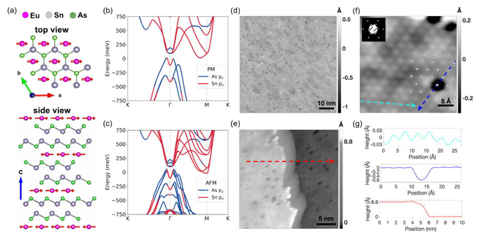
<figcaption class="paper-figure-caption"><b>Fig 1.</b> FIG. 1. Crystal structure and electronic topology of EuSn2As2. (a) Crystal structure of</figcaption>
</figure>
<figure class="paper-figure-card">
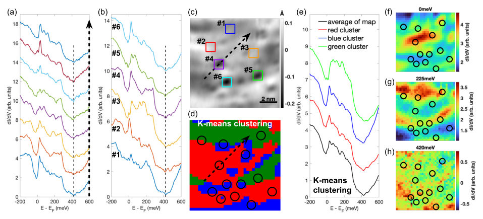
<figcaption class="paper-figure-caption"><b>Fig 2.</b> FIG. 2. Density of states and differential-conductance on EuSn2As2. (a) Spatially resolved dI/dV</figcaption>
</figure>
<figure class="paper-figure-card">
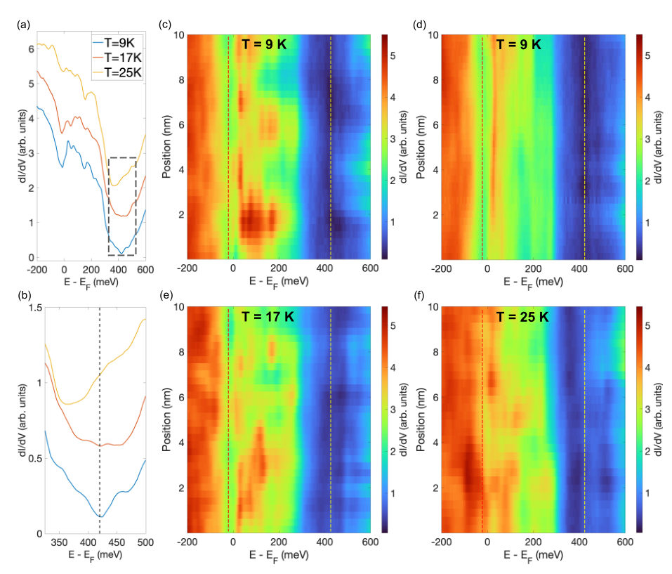
<figcaption class="paper-figure-caption"><b>Fig 3.</b> FIG. 3. Temperature-dependence of the electronic density of states across the AFM transition.</figcaption>
</figure>
<figure class="paper-figure-card">
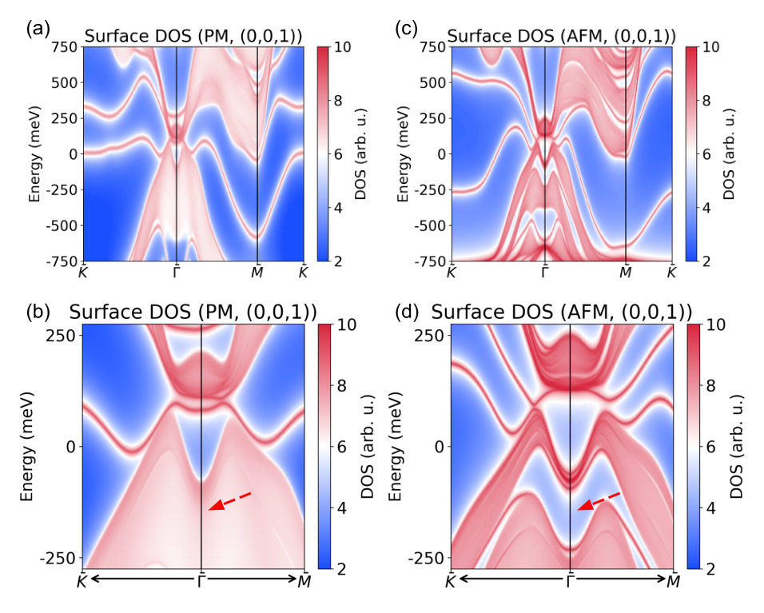
<figcaption class="paper-figure-caption"><b>Fig 4.</b> FIG. 4. Surface electronic structure calculations. (a,c) Calculated surface spectral function for</figcaption>
</figure>
</div>

<p><strong>Summary.</strong> This work uses STM and DFT to probe the electronic structure of the magnetic topological insulator EuSn2As2 across its magnetic transition. The key finding is the appearance of two distinct energy gaps below the Néel temperature, which the authors attribute to magnetic ordering and symmetry breaking. This highlights the material's potential for realizing axion-insulator-based devices.</p>
<p><strong>Why it may be interesting.</strong> The strong coupling between localized magnetic moments (Eu 4f) and itinerant topological states is a key area of modern condensed matter physics, relevant to spintronics and topological quantum materials.</p>
<details>
<summary>Detailed structure</summary>
<p><strong>Main problem.</strong> The study investigates the magnetically driven reconstruction of electronic states in the antiferromagnetic topological insulator EuSn2As2 across its Néel transition.</p>
<p><strong>Main result.</strong> The research observes two distinct magnetically driven gaps (100 meV and 50 meV) opening below the Néel temperature, providing real-space evidence of strong coupling between localized magnetic moments and itinerant topological states.</p>
<p><strong>Method.</strong> The study combines variable-temperature Scanning Tunneling Microscopy/Spectroscopy (STM/STS) with Density Functional Theory (DFT) calculations.</p>
<p><strong>Model / system.</strong> The system is the antiferromagnetic topological insulator EuSn2As2, which is studied in both paramagnetic and antiferromagnetic phases. The electronic structure evolution is mapped across the magnetic transition temperature (T_N = 24 K).</p>
<p><strong>Key observables.</strong> Emergence of two distinct energy gaps (100 meV near E_F and 50 meV at the Dirac point), electronic inhomogeneity due to Sn vacancies, and temperature dependence of the gaps.</p>
<p><strong>Important parameters / regimes.</strong> Néel temperature (T_N = 24 K), gap energies (100 meV, 50 meV), and the magnetic ordering parameter.</p>
<p><strong>Assumptions / limitations.</strong> The 50 meV gap opening is attributed to the lifting of mirror-symmetry protection by Sn vacancies, although contributions from AFM-induced folding hybridization cannot be entirely ruled out.</p>
<p><strong>Figures summary.</strong> Figures show crystal structures, DFT calculations for PM and AFM phases, and STM/STS spectra/maps illustrating the opening of the 100 meV gap and the 50 meV gap at different energies and defect locations.</p>
<p><strong>Paper structure.</strong> The paper progresses by first establishing the physical system and methods (STM/STS, DFT), then detailing the observation of surface defects and the two distinct temperature-dependent gaps, and finally attributing the origin of these gaps to specific symmetry breakings (magnetic/structural).</p>
</details>
<details>
<summary>Abstract</summary>
<p>The realization of the axion insulator phase in magnetic topological insulators is often hindered by crystalline symmetries that protect gapless surface states, even when time-reversal symmetry is broken. Here, we use variable-temperature scanning tunneling microscopy (STM) and spectroscopy (STS), complemented with density functional theory (DFT), to investigate the local electronic structure of the antiferromagnetic (AFM) topological insulator EuSn$_2$As$_2$ across its Néel transition at $T_N = 24$ K. On the (001) surface, we observe a substantial density of intrinsic Sn vacancies that introduce nanoscale electronic inhomogeneity and p-type doping. Upon cooling below $T_N$, we resolve the emergence of two distinct magnetically driven gaps: a $\sim$100 meV gap near the Fermi level and a $\sim$50 meV gap at the ARPES-resolved Dirac point. We attribute the former gap to AFM Brillouin-zone folding and hybridization. The characteristics of the 50 meV gap point toward the lifting of mirror-symmetry protection by Sn vacancies and the consequent mass gapping of the Dirac point, although contributions from AFM-induced folding hybridization cannot be entirely ruled out. Our findings provide real-space evidence for strong coupling between localized moments and itinerant topological states, highlighting exfoliable EuSn$_2$As$_2$ as a potential candidate for realizing axion-insulator-based devices.</p>
</details>
<p><sub><a href="#top">↑ back to top</a></sub></p>

<p><a id="paper-2606.02440"></a></p>
<h3 id="microwave-crosstalk-in-planar-superconducting-quantum-devices"><a href="http://arxiv.org/abs/2606.02440v1">Microwave Crosstalk in Planar Superconducting Quantum Devices</a></h3>
<p><strong>Authors:</strong> Yongxin Song, Dominic Hagmann, Kieran Dalton, Felix Henrich, Felix Wagner, Mohsen Bahrami Panah, Marek Pechal, Andreas Wallraff<br>
<strong>Type:</strong> both · <strong>Category:</strong> quantum information and computing · <strong>PDF:</strong> <a href="https://arxiv.org/pdf/2606.02440v1">https://arxiv.org/pdf/2606.02440v1</a><br>
<strong>Analysis basis:</strong> full PDF text, analyzed in chunks
<strong>Topic relevance:</strong> <code>QC/QI experiment</code> <strong>3/5</strong></p>
<div class="figure-strip-hint">↔ Scroll figures horizontally</div>
<div class="paper-figures-scroll">
<figure class="paper-figure-card">
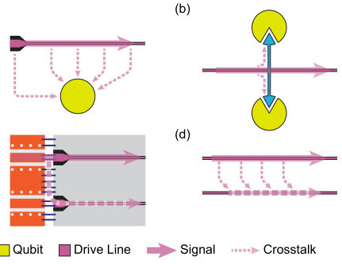
<figcaption class="paper-figure-caption"><b>Fig 1.</b> FIG. 1. Microwave crosstalk channels. Schematic view of (a) a drive line (pink) routed in the proximity of a cross- coupled qubit (yellow), (b) a drive line crossing a qubit-qubit coupler (blue) with an air bridge crossover, (c) neighboring signal lines connected to the PCB (orange) with wire bonds (blue), and (d) signal lines running in parallel. The drive (solid) and crosstalk (dashed) signals are indicated with trans- parent pink arrows.</figcaption>
</figure>
<figure class="paper-figure-card">
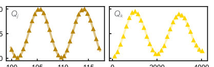
<figcaption class="paper-figure-caption"><b>Fig 2.</b> FIG. 2. Crosstalk characterization. (a) A drive line j coupled to its target qubit Qj (brown) with coupling rate Γj,j and to a cross-coupled qubit Qk (yellow) with coupling rate Γk,j. During the crosstalk characterization, a set of flat-top Gaussian filtered microwave pulses (pink) with a fixed ampli- tude and varying durations t are applied from the drive line to excite the two qubits. (b) Example of measured (triangles) excited-state population P|e⟩of the target (brown) and cross- coupled (yellow) qubit as a function of drive pulse duration t. Solid lines of the same color show the fits to exponentially damped sinusoidal oscillations.</figcaption>
</figure>
<figure class="paper-figure-card">
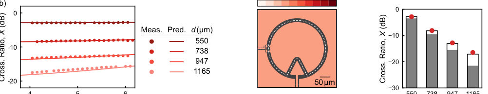
<figcaption class="paper-figure-caption"><b>Fig 3.</b> FIG. 3. Characterizing and modeling the proximity-induced microwave crosstalk. (a) False-colored micrograph of a test structure for the proximity-induced microwave crosstalk. d denotes the distance between the drive line and the cross-coupled qubit. (b) Crosstalk drive ratio X as a function of qubit frequency ω/2π at different distances d. Circles show the measured crosstalk and the lines of the same color show the model. (c) Schematic of driving the qubit via the direct capacitive coupling from the drive line. The brown curve shows the distribution of the voltage amplitude as a function of length x from the open end. The circuit highlighted in pink illustrates the distributed capacitance...</figcaption>
</figure>
<figure class="paper-figure-card">
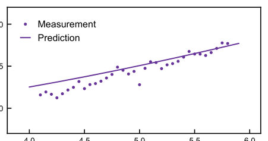
<figcaption class="paper-figure-caption"><b>Fig 4.</b> FIG. 4. Driving the qubit via a shorted bonding pad. (a) False-colored micrograph of the test structure where a cross-coupled qubit (yellow) is driven by a microwave signal applied to a shorted bonding pad (black). (b) Measured (cir- cles) and simulated (line) crosstalk drive ratio X relative to the qubit’s designated drive line as a function of the qubit frequency ω/2π.</figcaption>
</figure>
<figure class="paper-figure-card">
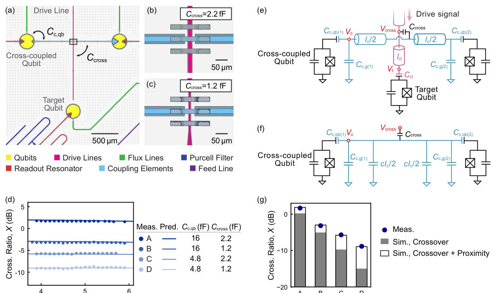
<figcaption class="paper-figure-caption"><b>Fig 5.</b> FIG. 5. Characterizing and modeling the crossover-induced microwave crosstalk. (a) False-colored micrograph of a test structure for the crossover-induced microwave crosstalk. Control parameters include the cross-capacitance Ccross, which depends on the geometry of the air bridge crossover, and the coupler capacitance to qubit Cc,qb which depends on the coupler size. The black box marks the position of the air bridge crossover. In this experiment, we measured crossover designs with (b) Ccross = 2.2 fF and (c) Ccross = 1.1 fF. (d) Crosstalk drive ratio X as a function of qubit frequency ω/2π for different combinations of Cc,qb and Ccross. Circles show the measured crosstalk, and the solid...</figcaption>
</figure>
</div>

<p><strong>Summary.</strong> This work addresses the critical issue of microwave crosstalk in superconducting quantum chips by developing quantitative physical models. The authors identify two main crosstalk sources—proximity and crossover—and show that the total error requires accounting for both direct capacitive coupling and package-mediated stray fields. The results offer practical design rules to minimize these errors for building larger quantum processors.</p>
<p><strong>Why it may be interesting.</strong> The detailed modeling of crosstalk mechanisms—especially the distinction between direct capacitance and package-mediated stray fields—provides crucial physical insight into scaling limitations for superconducting quantum hardware.</p>
<details>
<summary>Detailed structure</summary>
<p><strong>Main problem.</strong> Microwave crosstalk in planar superconducting quantum devices introduces excess control errors, posing a major challenge for scaling quantum processors.</p>
<p><strong>Main result.</strong> The study identifies proximity-induced and crossover-induced crosstalk as dominant sources, providing quantitative models to guide low-crosstalk device layouts.</p>
<p><strong>Method.</strong> The authors developed quantitative physical models by combining analytical circuit theory (for capacitive coupling) with RF finite-element simulations (for package-mediated effects).</p>
<p><strong>Model / system.</strong> The system involves planar superconducting devices with transmon qubits, CPW drive lines, and crossovers. Crosstalk is modeled as a combination of direct capacitive coupling, package-mediated coupling, and air-bridge coupling.</p>
<p><strong>Key observables.</strong> Cross-drive ratio ($X_{k,j}$), Rabi rates ($\Omega$), and the resulting quantum error ($\epsilon$).</p>
<p><strong>Important parameters / regimes.</strong> Distance ($d$), frequency ($\omega$), and coupling capacitances ($C_{cross}$, $C_{dl,eff}$).</p>
<p><strong>Assumptions / limitations.</strong> The analysis often relies on quasi-lumped-element approximations and assumes linear behavior for the package/ground plane capacitance.</p>
<p><strong>Figures summary.</strong> Figures illustrate schematic crosstalk channels (proximity, crossover, package-induced), measurement procedures for extracting Rabi rates, and quantitative comparisons between simulated and measured crosstalk ratios as a function of distance and geometry.</p>
<p><strong>Paper structure.</strong> The paper systematically identifies the physical sources of crosstalk, develops separate quantitative models for proximity and crossover effects, compares these models against experimental measurements, and concludes with design guidelines for mitigation.</p>
</details>
<details>
<summary>Abstract</summary>
<p>Microwave crosstalk poses a major challenge to scaling superconducting quantum devices as it introduces excess control errors. Although its magnitude and impact have been explored in various experimental settings, quantitative physical models capable of explaining measured crosstalk for a given device geometry remain scarce. Here, we address this gap by investigating microwave crosstalk in planar superconducting devices with crossovers. We identify two structures that can lead to strong crosstalk: a drive line routed in close proximity to another qubit, and a drive line crossing a qubit-qubit coupler using an air bridge. We design and characterize devices involving these structures and develop physical models that quantitatively explain the experimentally observed crosstalk. Based on these models, we discuss the design considerations for reducing microwave crosstalk. Our results provide practical guidance for low-crosstalk device layouts and establish a basis for the systematic investigation of weaker crosstalk mechanisms.</p>
</details>
<p><sub><a href="#top">↑ back to top</a></sub></p>

<p><a id="paper-2606.00429"></a></p>
<h3 id="polytopic-quantum-resource-theories-geometry-and-structures"><a href="http://arxiv.org/abs/2606.00429v1">Polytopic Quantum Resource Theories: Geometry and Structures</a></h3>
<p><strong>Authors:</strong> Moein Naseri, Chirag Srivastava, Chandan Datta, John H. Selby, Shubhayan Sarkar<br>
<strong>Type:</strong> theory · <strong>Category:</strong> other · <strong>PDF:</strong> <a href="https://arxiv.org/pdf/2606.00429v1">https://arxiv.org/pdf/2606.00429v1</a><br>
<strong>Analysis basis:</strong> full PDF text, analyzed in chunks
<strong>Topic relevance:</strong> <code>entanglement &amp; information structure</code> <strong>3/5</strong></p>
<div class="figure-strip-hint">↔ Scroll figures horizontally</div>
<div class="paper-figures-scroll">
<figure class="paper-figure-card">
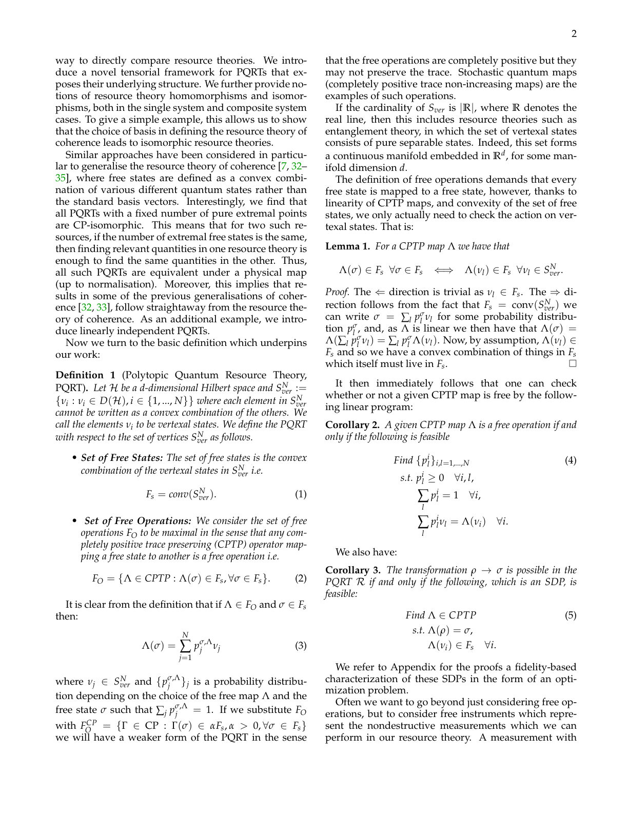
<figcaption class="paper-figure-caption"><b>Fig 1.</b> Low-resolution page preview, page 2</figcaption>
</figure>
<figure class="paper-figure-card">
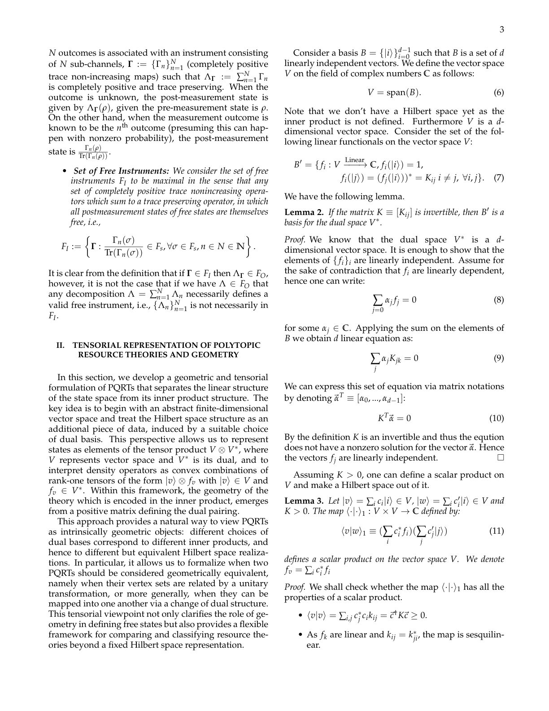
<figcaption class="paper-figure-caption"><b>Fig 2.</b> Low-resolution page preview, page 3</figcaption>
</figure>
<figure class="paper-figure-card">
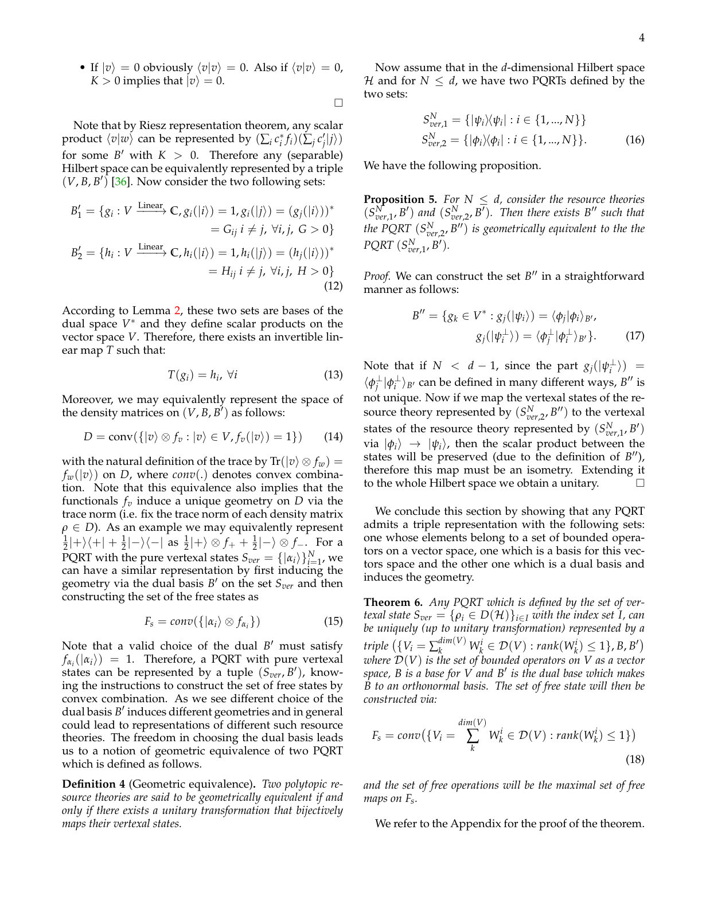
<figcaption class="paper-figure-caption"><b>Fig 3.</b> Low-resolution page preview, page 4</figcaption>
</figure>
<figure class="paper-figure-card">

<figcaption class="paper-figure-caption"><b>Fig 4.</b> Low-resolution page preview, page 5</figcaption>
</figure>
<figure class="paper-figure-card">

<figcaption class="paper-figure-caption"><b>Fig 5.</b> Low-resolution page preview, page 6</figcaption>
</figure>
</div>

<p><strong>Summary.</strong> This paper introduces Polytopic Quantum Resource Theories (PQRTs) as a geometric framework to unify the study of quantum resources. It develops sophisticated mathematical tools, including homomorphisms and isomorphisms, to rigorously compare different resource theories. The work reveals deep structural equivalences between these theories and provides monotonicity properties for various resource measures.</p>
<p><strong>Why it may be interesting.</strong> This work provides a deep mathematical structure to resource theories, which is fundamental for understanding the limits of quantum information processing and resource quantification in any quantum physical system.</p>
<details>
<summary>Detailed structure</summary>
<p><strong>Main problem.</strong> The paper develops a general, unified framework to quantify, compare, and manipulate various quantum resources (like entanglement or coherence) under operational constraints.</p>
<p><strong>Main result.</strong> It establishes that all Polytopic Quantum Resource Theories (PQRTs) sharing a fixed number of pure extremal states are equivalent under a physical map, and introduces rigorous mathematical tools (homomorphism/isomorphism) to compare their structures.</p>
<p><strong>Method.</strong> The authors use convex geometry, linear algebra, and tensor representations to model the set of free states as a polytope, allowing for the formulation of equivalence criteria via homomorphisms and isomorphisms.</p>
<p><strong>Model / system.</strong> The theory applies to general quantum systems described by finite-dimensional Hilbert spaces, where the resource is defined by the convex hull of a finite set of extremal pure states.</p>
<p><strong>Key observables.</strong> Resource measures such as Robustness ($MR$), Geometric Measure ($MF$), and Negativity ($MN$) are analyzed for their monotonicity under free operations.</p>
<p><strong>Important parameters / regimes.</strong> The number of pure extremal states ($|S_{	ext{ver}}|$), the dimension of the Hilbert space ($d$), and the structure of the underlying basis are key parameters.</p>
<p><strong>Assumptions / limitations.</strong> The analysis often assumes finite-dimensional Hilbert spaces and relies on the ability to characterize free operations using Semidefinite Programming (SDP) feasibility problems.</p>
<p><strong>Figures summary.</strong> Not specified, but the notes detail the mathematical structure of the equivalence proofs, involving tensor representations and mapping diagrams.</p>
<p><strong>Paper structure.</strong> The paper progresses by first defining PQRTs geometrically, then introducing tensorial representations, followed by developing formal notions of homomorphism and isomorphism to compare theories, and finally analyzing the monotonicity of various resource measures.</p>
</details>
<details>
<summary>Abstract</summary>
<p>Quantum resource theories provide a unifying framework to quantify, compare, and manipulate quantum resources under well-defined operational constraints. Here, we consider any resource theory where the set of free states can be expressed as a convex combination of a set of quantum states, referred to as extremal states and name them as polytopic quantum resource theories (PQRT). These include some of the most studied resource theories, such as coherence and magic. We formulate a novel tensorial representation of PQRTs that reveals the underlying geometry of these theories and provides insight into the origin of the resources. We further address a fundamental question in resource theories that when two theories should be regarded as physically equivalent, and to this purpose we introduce notions of homomorphism and isomorphism that compare both the structure of free states and the allowed transformations. Using the tools we develop, we find results revealing the geometrical and structural foundations of such theories. Interestingly, we find that all polytopic resource theories with a fixed number of pure extremal points are equivalent under a physical map, up to normalisation. Additionally, we introduce linearly independent polytopic resource theories (resource theory of ``basis-non-convexity''), where the set of extremal free states forms a basis of the quantum density operators. We further study the categorical structures of PQRTs beyond single systems.</p>
</details>
<p><sub><a href="#top">↑ back to top</a></sub></p>

<p><a id="paper-2606.01949"></a></p>
<h3 id="quantum-secure-blind-decryption-with-two-users"><a href="http://arxiv.org/abs/2606.01949v1">Quantum secure blind decryption with two users</a></h3>
<p><strong>Authors:</strong> Masahito Hayashi, Yuki Ito<br>
<strong>Type:</strong> theory · <strong>Category:</strong> quantum information and computing · <strong>PDF:</strong> <a href="https://arxiv.org/pdf/2606.01949v1">https://arxiv.org/pdf/2606.01949v1</a><br>
<strong>Analysis basis:</strong> full PDF text, analyzed in chunks
<strong>Topic relevance:</strong> <code>entanglement &amp; information structure</code> <strong>3/5</strong></p>
<div class="figure-strip-hint">↔ Scroll figures horizontally</div>
<div class="paper-figures-scroll">
<figure class="paper-figure-card">

<figcaption class="paper-figure-caption"><b>Fig 1.</b> FIG. 1. Secure decryption protocol without key index secrecy.</figcaption>
</figure>
<figure class="paper-figure-card">

<figcaption class="paper-figure-caption"><b>Fig 2.</b> FIG. 2. two-server protocol.</figcaption>
</figure>
</div>

<p><strong>Summary.</strong> This paper proposes and analyzes quantum protocols for blind decryption involving two users and multiple servers. It introduces a superior two-server protocol that guarantees message and key secrecy, even when considering post-attack scenarios. The work demonstrates a clear quantum advantage over classical cryptographic schemes in maintaining information security.</p>
<p><strong>Why it may be interesting.</strong> While the core topic is cryptography, the rigorous use of quantum state analysis, entanglement, and information-theoretic security proofs provides deep theoretical insights into the limits of secure quantum communication.</p>
<details>
<summary>Detailed structure</summary>
<p><strong>Main problem.</strong> The paper addresses the challenge of achieving quantum secure blind decryption involving two users and multiple servers while maintaining strong secrecy guarantees.</p>
<p><strong>Main result.</strong> The proposed two-server quantum protocol successfully achieves message, key, and key-index secrecy, and crucially, maintains security even under post-attack scenarios where classical methods fail.</p>
<p><strong>Method.</strong> The authors develop and analyze two quantum protocols (one-server and two-server) using quantum information theory tools like entanglement, Pauli operators, and mutual information calculations.</p>
<p><strong>Model / system.</strong> The model involves quantum information processing using quantum states and channels (TPCP maps) applied across a system involving two users and two servers, utilizing concepts from quantum cryptography.</p>
<p><strong>Key observables.</strong> Message secrecy, key secrecy, key-index secrecy, and the final state of the composite system ($\kappa_1 \otimes \kappa_2$).</p>
<p><strong>Important parameters / regimes.</strong> The number of users/servers (two servers are preferred), the key index $K$, and the ciphertext $E$.</p>
<p><strong>Assumptions / limitations.</strong> The analysis assumes the message $M$ is uniformly distributed and relies on the 'specious condition' to prove security against sophisticated attacks.</p>
<p><strong>Figures summary.</strong> Figure 1 illustrates the one-server protocol (lacking key index secrecy), and Figure 2 illustrates the superior two-server protocol structure.</p>
<p><strong>Paper structure.</strong> The paper progresses by first analyzing a one-server protocol, identifying its limitations (especially regarding key index secrecy), and then introducing and proving the security of a more robust two-server protocol, culminating in a comparison with classical counterparts.</p>
</details>
<details>
<summary>Abstract</summary>
<p>We propose two types of protocols for quantum secure blind decryption, involving two users and servers. User 1 holds the encrypted ciphertext. The servers store several indexed keys including the key encrypting the ciphertext. User 2 aims to obtain the decrypted text. The protocols are designed to preserve the following types of secrecy: Users ensure the secrecy of the text from the servers. Servers maintain the secrecy of the keys from the users. Our protocols enable User 2 to obtain the decrypted text while preserving these secrecy requirements. Additionally, the second protocol ensures the secrecy of the key index to identify the key encrypting the ciphertext from the servers, and the second protocol requires two non-commuting servers. Furthermore, we analyze the secrecy of the second protocol under post-attack scenarios, where the two servers communicates with each other after the completion of the protocol. We show that our quantum protocol satisfies the secrecy under these attacks, whereas its classical counterpart fails to do so.</p>
</details>
<p><sub><a href="#top">↑ back to top</a></sub></p>

<p><a id="paper-2606.02422"></a></p>
<h3 id="suppression-of-p-wave-altermagnetism-by-localized-4f-electrons-in-ceniaso"><a href="http://arxiv.org/abs/2606.02422v1">Suppression of p-Wave Altermagnetism by Localized 4f Electrons in CeNiAsO</a></h3>
<p><strong>Authors:</strong> Jiuxiang Zhang, Yueyang Sun, Honglin Zhou, Jumin Shi, Di Wu, Hongze Gu, Wenjin Mao, Hengrui Dong, Yu Xu, Yinghao Li, Ziling Cao, Taimin Miao, Bo Liang, Neng Cai, Wenpei Zhu, Mingkai Xu, Jiaqi Chen, Chunhong Deng, Bo Liu, Xun Ma, Zhengtai Liu, Mao Ye, Shenjin Zhang, Zhimin Wang, Fengfeng Zhang, Feng Yang, Qinjun Peng, Zuyan Xu, Guodong Liu, Xintong Li, Hanqing Mao, Shiliang Li, Hongming Weng, Lin Zhao, X. J. Zhou<br>
<strong>Type:</strong> both · <strong>Category:</strong> strongly correlated electrons · <strong>PDF:</strong> <a href="https://arxiv.org/pdf/2606.02422v1">https://arxiv.org/pdf/2606.02422v1</a><br>
<strong>Analysis basis:</strong> full PDF text, analyzed in chunks
<strong>Topic relevance:</strong> <code>Kondo &amp; dissipative impurity</code> <strong>3/5</strong></p>
<div class="figure-strip-hint">↔ Scroll figures horizontally</div>
<div class="paper-figures-scroll">
<figure class="paper-figure-card">

<figcaption class="paper-figure-caption"><b>Fig 1.</b> FIG. 1. Single-crystal characterization and itinerant electronic structure of CeNiAsO.</figcaption>
</figure>
<figure class="paper-figure-card">

<figcaption class="paper-figure-caption"><b>Fig 2.</b> FIG. 2. Orbital character and surface-state contribution in the electronic structure</figcaption>
</figure>
<figure class="paper-figure-card">

<figcaption class="paper-figure-caption"><b>Fig 3.</b> FIG. 3. Spectroscopic evidence on Ce 4f states and reassessment of the calculated</figcaption>
</figure>
<figure class="paper-figure-card">

<figcaption class="paper-figure-caption"><b>Fig 4.</b> FIG. 4. Absence of resolvable low-energy exchange splitting across the successive mag-</figcaption>
</figure>
</div>

<p><strong>Summary.</strong> This work investigates p-wave altermagnetism in the heavy-fermion material CeNiAsO using ARPES and DFT calculations. The key finding is that strong correlations from localized Ce 4f electrons suppress the expected single-particle band-splitting signature. This suggests that the material operates in a strongly correlated limit where simple weak-coupling theories fail to describe the magnetic electronic structure.</p>
<p><strong>Why it may be interesting.</strong> The concept of correlation-driven suppression of magnetic signatures is highly relevant to understanding exotic quantum states in strongly correlated materials, bridging magnetism and electronic structure theory.</p>
<details>
<summary>Detailed structure</summary>
<p><strong>Main problem.</strong> To understand how symmetry-allowed p-wave altermagnetism manifests in heavy-fermion materials where magnetic exchange competes with Kondo correlations.</p>
<p><strong>Main result.</strong> Strong $4f$ correlations, when treated correctly using DFT+U, suppress the observable single-particle band-splitting signature expected from a weak-correlation picture of p-wave magnetism.</p>
<p><strong>Method.</strong> The study combines high-resolution Angle-Resolved Photoemission Spectroscopy (ARPES) measurements with first-principles calculations using DFT, comparing itinerant vs. localized $4f$ electron treatments.</p>
<p><strong>Model / system.</strong> The system studied is CeNiAsO, a heavy-fermion candidate for p-wave altermagnetism, involving the interplay between Ni $3d$ conduction bands and localized Ce $4f$ magnetic moments.</p>
<p><strong>Key observables.</strong> Resolvable near-Fermi-level p-wave exchange splitting on Ni $3d$ bands, Fermi-surface topology, and the spectral weight of Ce $4f$ states.</p>
<p><strong>Important parameters / regimes.</strong> The comparison between uncorrected itinerant-4f description and the localized-4f treatment ($U_{	ext{eff}}$) is critical; the residual splitting is found to be in the few-meV range.</p>
<p><strong>Assumptions / limitations.</strong> The analysis assumes that the strong $4f$ correlations fundamentally alter the single-particle spectral signature of the altermagnetic order, making the weak-correlation picture inapplicable.</p>
<p><strong>Figures summary.</strong> Figures detail the crystal structure, magnetic susceptibility, ARPES Fermi-surface mappings, and critically compare calculated band structures using different $U_{	ext{eff}}$ values to show the suppression of splitting.</p>
<p><strong>Paper structure.</strong> The paper first establishes the experimental context using ARPES to probe the magnetic state. It then uses DFT calculations, contrasting itinerant vs. localized $4f$ treatments, to theoretically explain the observed suppression of the expected p-wave splitting.</p>
</details>
<details>
<summary>Abstract</summary>
<p>Altermagnetism, characterized by momentum-dependent spin splitting and zero net magnetization, has so far been explored mainly in weakly or moderately correlated d-electron systems. How such symmetry-allowed band splitting manifests in heavy-fermion materials, where magnetic exchange competes with Kondo correlations, remains unclear. Here we use high-resolution angle-resolved photoemission spectroscopy to investigate CeNiAsO, a heavy-fermion candidate for p-wave altermagnetism. Despite macroscopic signatures consistent with the proposed p-wave magnetic order, we find no resolvable near-Fermi-level p-wave exchange splitting on the Ni 3d-derived conduction bands across the Neel transitions. Fermi-surface mapping, orbital-resolved ARPES identify that the low-energy electronic structure is dominated by Ni 3d bands, while resonant photoemission reveals that the Ce 4f states remain predominantly localized with residual c-f hybridization. First-principles calculations further show that an uncorrected itinerant-4f description produces dispersive Ce 4f bands and additional Fermi-surface pockets that are absent in experiment, thereby overestimating both the low-energy c-f hybridization and the exchange splitting transferred to the Ni 3d bands. When the localized Ce 4f character is incorporated through DFT+U , the experimental Fermi-surface topology is recovered and the residual p-wave splitting on the Ni 3d-derived bands is reduced to only a few meV, below the effective experimental resolution. These results identify CeNiAsO as a strongly correlated f-electron limit of p-wave magnetism, in which localized 4f electrons suppress the observable single-particle band-splitting signature expected from a weak-correlation picture.</p>
</details>
<p><sub><a href="#top">↑ back to top</a></sub></p>

<p><a id="paper-2606.01589"></a></p>
<h3 id="towards-heisenberg-scaling-measurement-efficient-non-orthogonal-quantum-eigensolver"><a href="http://arxiv.org/abs/2606.01589v1">Towards Heisenberg Scaling: Measurement-Efficient Non-Orthogonal Quantum Eigensolver</a></h3>
<p><strong>Authors:</strong> Hang Ren, Yipei Zhang, Thilo Scharnhorst, K. Birgitta Whaley<br>
<strong>Type:</strong> theory · <strong>Category:</strong> quantum information and computing · <strong>PDF:</strong> <a href="https://arxiv.org/pdf/2606.01589v1">https://arxiv.org/pdf/2606.01589v1</a><br>
<strong>Analysis basis:</strong> full PDF text, analyzed in chunks
<strong>Topic relevance:</strong> <code>quantum measurements</code> <strong>3/5</strong></p>
<div class="figure-strip-hint">↔ Scroll figures horizontally</div>
<div class="paper-figures-scroll">
<figure class="paper-figure-card">

<figcaption class="paper-figure-caption"><b>Fig 1.</b> Figure 1: Circuit diagram of the original NOQE method [1], modified to absorb the basis rotations into the ansatz operators eˆτi(j) (see text). Two N-qubit non-orthogonal ansatz states, |ψi⟩and |ψj⟩, are prepared and combined using controlled operations to enable modified Hadamard tests that measure Hij and Sij. After measuring these matrix elements, one solves the generalized eigenvalue problem (Eq. 2) to obtain the electronic energies. This circuit requires 2N + 1 qubits. A more compact version using N +1 physical qubits and requiring longer circuits was also presented in Ref. [1].</figcaption>
</figure>
<figure class="paper-figure-card">

<figcaption class="paper-figure-caption"><b>Fig 2.</b> Figure 2: Overview of the NOQE and IQAE–NOQE workflows. (a.1) In the original NOQE protocol, non-orthogonal ansatz states |ψi⟩= eˆτi |ψUHF⟩are prepared and the overlap and Hamiltonian matrix elements between these states are estimated via statistical sampling, leading to a measurement cost scaling as O(1/ε2). (a.2) In IQAE–NOQE, the same matrix elements are coherently encoded as amplitudes of a quantum state A |0n⟩, with A constructed from state-preparation unitaries, and are estimated using iterative quantum amplitude estimation, achieving a near-Heisenberg scaling of ˜O(1/ε). (b) The estimated overlap and Hamiltonian matrices are assembled. (c) Solving the resulting generalized eigenvalue...</figcaption>
</figure>
<figure class="paper-figure-card">

<figcaption class="paper-figure-caption"><b>Fig 3.</b> Figure 3: Circuit structure for IQAE–NOQE. (a) Standard IQAE setting, where an operator A prepares a state encoding the target amplitude, followed by repeated applications of the Grover operator Qk and measurement. (b) Construction of the state-preparation operator A for NOQE matrix-element estimation. Here A is built from the NOQE ansatz-state preparation and auxiliary unitaries, typically of the form V eˆτi e−ˆτj V †, such that the desired overlap or Hamiltonian matrix element is encoded into the measurement probability. (c) Definition of the Grover operator Q = A CZ A† CZ, which amplifies the encoded amplitude and enables near-Heisenberg scaling in the estimation of matrix elements. Here...</figcaption>
</figure>
<figure class="paper-figure-card">

<figcaption class="paper-figure-caption"><b>Fig 4.</b> Figure 4: Conceptual resource comparison between the original sampling-based NOQE and IQAE–NOQE. In the original NOQE protocol, each circuit execution uses the ansatz state-preparation blocks eˆτi(j) for the two ansatz states i(j) once, including their correlation operators and basis-rotation blocks. These can be viewed as having a reference circuit depth D = O(1). The matrix elements are then estimated by repeated sampling. Reaching additive precision ε requires R = O(1/ε2) repetitions, giving QNOQE = 1 × R = O(1/ε2) total queries. In IQAE–NOQE, the estimation is performed using a sequence of circuits with different Grover depths D1, D2, . . . , Dmax, where Dmax = O(1/ε). If the circuit at...</figcaption>
</figure>
<figure class="paper-figure-card">

<figcaption class="paper-figure-caption"><b>Fig 5.</b> Figure 5: Cumulative total query count Qtotal as a function of the IQAE iteration index t for the full H2 numerical experiment. Here Qtotal(t) denotes the accumulated number of IQAE queries up to iteration t, summed over all IQAE subroutines entering the overlap and Hamiltonian matrix reconstruction, rather than the query count for a single matrix element. At each iteration index t, we report the median cumulative query count across the trials that reached iteration t, and the error bars denote the interquartile range (25%–75%). The plot ends at t = 7 because no trial in this set of experiments required more than seven IQAE iterations, demonstrating a stable and reproducible stopping...</figcaption>
</figure>
</div>

<p><strong>Summary.</strong> This paper addresses the measurement bottleneck in the Non-Orthogonal Quantum Eigensolver (NOQE) by replacing inefficient sampling with Iterative Quantum Amplitude Estimation (IQAE). By reformulating matrix element estimation as amplitude estimation, the authors achieve a significant reduction in query complexity from $O(1/\epsilon^2)$ to $   ilde{O}(1/\epsilon)$. This demonstrates a general principle for making quantum algorithms more measurement-efficient.</p>
<p><strong>Why it may be interesting.</strong> This work provides a concrete example of how to systematically improve the resource scaling of a quantum algorithm by replacing statistical averaging with coherent quantum techniques, which is a major theme in quantum computation.</p>
<details>
<summary>Detailed structure</summary>
<p><strong>Main problem.</strong> The primary challenge is improving the measurement-limited scaling of the Non-Orthogonal Quantum Eigensolver (NOQE) used for electronic structure calculations.</p>
<p><strong>Main result.</strong> The authors propose an IQAE–NOQE protocol that replaces sampling-based estimation with coherent amplitude amplification, achieving a near-Heisenberg query complexity of O(1/epsilon).</p>
<p><strong>Method.</strong> The method reformulates matrix element estimation as amplitude estimation tasks and integrates Iterative Quantum Amplitude Estimation (IQAE) into the NOQE workflow.</p>
<p><strong>Model / system.</strong> The work applies to electronic structure calculations, specifically estimating the Hamiltonian and overlap matrices for molecular systems like the hydrogen molecule ($ ext{H}_2$).</p>
<p><strong>Key observables.</strong> Electronic energies, Overlap matrix elements ($S_{ij}$), and Hamiltonian matrix elements ($H_{ij}$).</p>
<p><strong>Important parameters / regimes.</strong> Target additive precision $\epsilon$, and the scaling improvement from $O(1/\epsilon^2)$ to $    ilde{O}(1/\epsilon)$.</p>
<p><strong>Assumptions / limitations.</strong> The original NOQE method's cost is dominated by sampling-based measurement, which the IQAE approach systematically reformulates to leverage quantum coherence.</p>
<p><strong>Figures summary.</strong> Figures compare the resource scaling, showing the quadratic improvement in query complexity from the original sampling method to the proposed IQAE method, and demonstrate energy convergence for $    ext{H}_2$.</p>
<p><strong>Paper structure.</strong> The paper first identifies the $O(1/\epsilon^2)$ bottleneck in NOQE, then introduces IQAE to map estimation to amplitude estimation, details the circuit construction for both overlap and Hamiltonian terms, and concludes with numerical simulations comparing the resource efficiency.</p>
</details>
<details>
<summary>Abstract</summary>
<p>The Non-Orthogonal Quantum Eigensolver (NOQE) provides an accurate framework for electronic-structure calculations, but the estimation of its Hamiltonian and overlap matrix elements relies on sampling and requires $O(1/\varepsilon^2)$ circuit repetitions to achieve additive precision $\varepsilon$. Here, we reformulate this matrix-element estimation step as a collection of amplitude-estimation tasks and integrate iterative quantum amplitude estimation into the NOQE workflow. The resulting protocol achieves near-Heisenberg query complexity $O(1/\varepsilon)$ for these estimation tasks, by replacing incoherent statistical averaging with coherent amplitude amplification. We present explicit circuit constructions and the corresponding implementation procedure. Numerical simulations for the electronic states of the hydrogen molecule show that the proposed method reaches chemical accuracy with substantially fewer total queries than the original sampling-based protocol. Overall, this work provides a measurement-efficient route to high-precision energy estimation and illustrates how sampling-limited quantum algorithms can be systematically reformulated to leverage quantum coherence and achieve lower measurement costs.</p>
</details>
<p><sub><a href="#top">↑ back to top</a></sub></p>

<p><a id="paper-2606.02052"></a></p>
<h3 id="a-minimal-duality-estimate-for-the-surface-code-threshold-under-nearest-neighbor-correlated-errors"><a href="http://arxiv.org/abs/2606.02052v1">A Minimal Duality Estimate for the Surface-Code Threshold under Nearest-Neighbor Correlated Errors</a></h3>
<p><strong>Authors:</strong> Masayuki Ohzeki<br>
<strong>Type:</strong> theory · <strong>Category:</strong> disordered systems and neural networks · <strong>PDF:</strong> <a href="https://arxiv.org/pdf/2606.02052v1">https://arxiv.org/pdf/2606.02052v1</a><br>
<strong>Analysis basis:</strong> full PDF text, analyzed in chunks
<strong>Topic relevance:</strong> <code>Keldysh / 2PI / non-Gaussian methods</code> <strong>2/5</strong> · <code>analog quantum simulation</code> <strong>2/5</strong> · <code>methods for driven-dissipative</code> <strong>2/5</strong> · <code>entanglement &amp; information structure</code> <strong>1/5</strong> · <code>exotic spin models in light-matter</code> <strong>1/5</strong></p>
<div class="figure-strip-hint">↔ Scroll figures horizontally</div>
<div class="paper-figures-scroll">
<figure class="paper-figure-card">

<figcaption class="paper-figure-caption"><b>Fig 1.</b> Low-resolution page preview, page 2</figcaption>
</figure>
</div>

<p><strong>Summary.</strong> This theoretical paper calculates the error threshold for the surface code when errors are correlated, modeling the problem as a random-bond Ising model. By applying the single-equation duality criterion, the authors derive a precise estimate for the critical error probability. This result provides a strong theoretical benchmark for fault-tolerant quantum computation in the presence of correlated noise.</p>
<p><strong>Why it may be interesting.</strong> While focused on QEC, the underlying mathematical machinery—mapping a physical constraint problem to a statistical mechanics model (RBIM) and using duality/replica techniques—is highly relevant to disordered systems studied in AMO and condensed matter theory.</p>
<details>
<summary>Detailed structure</summary>
<p><strong>Main problem.</strong> The paper aims to determine the threshold error rate for quantum error correction (QEC) applied to the surface code when nearest-neighbor correlated errors are present.</p>
<p><strong>Main result.</strong> For the symmetric case of error probabilities, the calculated threshold is $p_c = 0.0288427147$, which closely matches existing numerical estimates of about 3%.</p>
<p><strong>Method.</strong> The analysis employs the single-equation duality criterion applied to a random-bond Ising model derived from the error-edge map.</p>
<p><strong>Model / system.</strong> The physical system is the surface code under nearest-neighbor correlated errors, which is mapped onto a random-bond Ising model (RBIM) on a square-octagonal lattice. The Hamiltonian involves quenched bond variables $   au_e$ and local constraints.</p>
<p><strong>Key observables.</strong> The critical threshold probability ($p_c$) where the system transitions between phases.</p>
<p><strong>Important parameters / regimes.</strong> The error probabilities ($p_1, p_2, p_3$) governing the correlated errors, and the effective error probabilities $ar{p}_i$.</p>
<p><strong>Assumptions / limitations.</strong> The estimate is derived using a 'minimal-cell duality estimate,' and the authors note difficulties in performing systematic cluster improvements.</p>
<p><strong>Figures summary.</strong> Figure 1 illustrates the minimal cluster entering the principal Boltzmann factor, showing the structure of the effective edges ($l_1, l_2, l_3$).</p>
<p><strong>Paper structure.</strong> The paper applies the duality criterion to the RBIM partition function, derives a scalar equation using the replica limit, and solves this equation for the symmetric case to find the threshold.</p>
</details>
<details>
<summary>Abstract</summary>
<p>We apply the single-equation duality criterion to the square-octagonal random-bond Ising model recently obtained from an exact error-edge map for a surface code with nearest-neighbor correlated errors. The calculation is performed for the minimal cell after the error-edge reduction. For the symmetric case \(p_1=p_2=p_3=p\), this gives \(p_c=0.0288427147\), in close agreement with the reported numerical threshold of about \(3\%\).</p>
</details>
<p><sub><a href="#top">↑ back to top</a></sub></p>

<p><a id="paper-2606.01750"></a></p>
<h3 id="role-of-system-bath-interaction-in-non-markovian-quantum-brownian-otto-cycles"><a href="http://arxiv.org/abs/2606.01750v1">Role of System-Bath Interaction in Non-Markovian Quantum Brownian Otto Cycles</a></h3>
<p><strong>Authors:</strong> Haena Shim, Joonhyun Yeo<br>
<strong>Type:</strong> theory · <strong>Category:</strong> statistical mechanics · <strong>PDF:</strong> <a href="https://arxiv.org/pdf/2606.01750v1">https://arxiv.org/pdf/2606.01750v1</a><br>
<strong>Analysis basis:</strong> full PDF text, analyzed in chunks
<strong>Topic relevance:</strong> <code>non-equilibrium dynamics</code> <strong>2/5</strong> · <code>Keldysh / 2PI / non-Gaussian methods</code> <strong>1/5</strong> · <code>correlated / nonlocal dissipation</code> <strong>1/5</strong> · <code>driven-dissipative phase transition</code> <strong>1/5</strong> · <code>methods for driven-dissipative</code> <strong>1/5</strong> · <code>non-equilibrium universality</code> <strong>1/5</strong></p>
<div class="figure-strip-hint">↔ Scroll figures horizontally</div>
<div class="paper-figures-scroll">
<figure class="paper-figure-card">

<figcaption class="paper-figure-caption"><b>Fig 1.</b> FIG. 1. Schematic diagram showing the four stages of the quantum Otto cycle</figcaption>
</figure>
<figure class="paper-figure-card">

<figcaption class="paper-figure-caption"><b>Fig 2.</b> FIG. 2. The upper panel shows the time evolution of the state variables ⟨H⟩(red), ⟨L⟩(blue) and ⟨C⟩(green) of the periodic steady state for the Otto cycle which consists of the adiabatic processes with τh = τc = 3 and the isochoric ones with τhc = τch = 2 (see Eq. (31). The parameters used are ωc = 1, ωh = 15, Tc = 1, Th = 50, Ω= 20 and γ = 0.1. The solid lines are results from the exact solutions of the Heisenberg-Langevin equations and the dashed lines are from the Lindblad equation. The lower panel shows the time evolution of the average interaction energy ⟨HI(t)⟩during the same Otto cycle.</figcaption>
</figure>
<figure class="paper-figure-card">

<figcaption class="paper-figure-caption"><b>Fig 3.</b> FIG. 3. Same as Fig. 2 except for the coupling strength γ = 0.7 between the system and the bath.</figcaption>
</figure>
<figure class="paper-figure-card">

<figcaption class="paper-figure-caption"><b>Fig 4.</b> FIG. 5. Filled circles are the heat from the hot and cold bath, Qh, Qc, respectively as a function of τh for fixed τhc = 2.33 for the case shown in Fig. 4. eQh and g PQc are the corresponding heat when the interaction energy is not included (see Eq. (39)). ⟨∆H(ν) I ⟩(triangles) is the change in the interaction energy during the hot ν = h and cold ν = c isochoric processes (see Eq. (43)).</figcaption>
</figure>
<figure class="paper-figure-card">

<figcaption class="paper-figure-caption"><b>Fig 5.</b> FIG. 4. The work output W (filled circles) as a function of τh for fixed τhc = 2.33. The parameters used are ωc = 1, ωh = 15, Tc = 1, Th = 100 and Ω= 10. Open circles are f W, which is the work when the interaction energy is not included (see Eq. (38)).</figcaption>
</figure>
</div>

<p><strong>Summary.</strong> This paper analyzes quantum Otto cycles operating in the non-Markovian regime by exactly treating the system-bath interaction. The authors demonstrate that this interaction significantly modifies the cycle's thermodynamics, showing that the Markovian approximation fails to capture the true behavior. Crucially, they show that the non-Markovian engine's performance falls below the Markovian power-efficiency bound.</p>
<p><strong>Why it may be interesting.</strong> This work is highly relevant as it pushes beyond the standard Markovian assumptions in quantum thermodynamics, providing quantitative insights into how memory effects (non-Markovianity) fundamentally alter the performance limits of quantum heat engines.</p>
<details>
<summary>Detailed structure</summary>
<p><strong>Main problem.</strong> The study investigates the role of system-bath interaction in determining the thermodynamic properties of non-Markovian quantum Otto cycles.</p>
<p><strong>Main result.</strong> The non-Markovian engine's power-efficiency data fall below the established Markovian power-efficiency bound, and neglecting the interaction energy leads to unphysical thermodynamic predictions.</p>
<p><strong>Method.</strong> The authors analytically solve the exact Heisenberg-Langevin equations to track the time evolution of the system and interaction energy, comparing these results against the standard Markovian Lindblad equation.</p>
<p><strong>Model / system.</strong> The system is a quantum harmonic oscillator (working medium) undergoing an Otto cycle, coupled to two heat baths (hot and cold) via a Caldeira-Leggett model interaction.</p>
<p><strong>Key observables.</strong> Work output (W), heat absorbed (Q_h, Q_c), and the change in interaction energy during isochoric processes.</p>
<p><strong>Important parameters / regimes.</strong> Coupling strength ($\gamma$), bath spectral density parameters ($\Omega$), and the duration of the isochoric processes ($ au_h$).</p>
<p><strong>Assumptions / limitations.</strong> The primary assumption is the ability to solve the exact Heisenberg-Langevin equations, allowing for a direct comparison against the weak-coupling Markovian approximation.</p>
<p><strong>Figures summary.</strong> Figures illustrate the four stages of the cycle, compare exact vs. Markovian time evolutions, and plot work, heat, efficiency, and power versus cycle time parameters, highlighting the impact of interaction energy.</p>
<p><strong>Paper structure.</strong> The paper develops the framework by first defining the Hamiltonian and solving the exact dynamics via Heisenberg-Langevin equations. It then applies this to calculate work and heat for the Otto cycle, explicitly incorporating interaction energy corrections, and finally compares these non-Markovian results against the established Markovian bounds and theoretical limits.</p>
</details>
<details>
<summary>Abstract</summary>
<p>We study finite-time quantum Otto cycles whose working medium is a harmonic oscillator undergoing a quantum Brownian motion described by the Caldeira-Leggett model when the oscillator is in contact with heat baths in isochoric processes. The time evolution of the Otto cycle is studied by analytically solving the exact Heisenberg-Langevin equations for the system variables and the interaction energy between the system and the bath. This enables us to investigate non-Markovian strong-coupling effects on the quantum Otto cycle. We obtain cyclic steady states and study the thermodynamic properties of the Otto cycle for various values of the parameters describing the heat baths and the coupling between the system and the bath. We compare our results with those obtained in the Markovian limit, where the time evolution is described by the Lindblad equation. We find that the change in the interaction energy during the isochoric process contributes to both work and heat, and plays a crucial role in determining thermodynamic behavior of the cycle. In particular, we find that when the Otto cycle operates as an engine, the effect of the interaction energy is to reduce the work output. We also compare our results with the power-efficiency trade-off relation recently proposed for the Markovian quantum Otto engine. We find that the power of our non-Markovian engine for a given efficiency value falls below the Markovian power-efficiency bound.</p>
</details>
<p><sub><a href="#top">↑ back to top</a></sub></p>

<p><a id="paper-2606.02574"></a></p>
<h3 id="quantum-simulation-of-nucleon-antinucleon-interaction-in-large-math799math-qcdmath800math-on-an-ibm-quantum-nighthawk-processor"><a href="http://arxiv.org/abs/2606.02574v1">Quantum Simulation of Nucleon-Antinucleon Interaction in Large-$N$ QCD$_2$ on an IBM Quantum Nighthawk Processor</a></h3>
<p><strong>Authors:</strong> Cameron V. Cogburn, Sebastian Grieninger, Dmitri E. Kharzeev<br>
<strong>Type:</strong> both · <strong>Category:</strong> numerical methods · <strong>PDF:</strong> <a href="https://arxiv.org/pdf/2606.02574v1">https://arxiv.org/pdf/2606.02574v1</a><br>
<strong>Analysis basis:</strong> full PDF text, analyzed in chunks
<strong>Topic relevance:</strong> <code>analog quantum simulation</code> <strong>2/5</strong> · <code>methods for driven-dissipative</code> <strong>2/5</strong> · <code>Frenkel-Kontorova</code> <strong>1/5</strong> · <code>Keldysh / 2PI / non-Gaussian methods</code> <strong>1/5</strong></p>
<div class="figure-strip-hint">↔ Scroll figures horizontally</div>
<div class="paper-figures-scroll">
<figure class="paper-figure-card">

<figcaption class="paper-figure-caption"><b>Fig 1.</b> FIG. 1. Kink–antikink interaction potential V (r) extracted on quantum hardware (HW) compared with exact diagonalization (ED) for an L = 14 chain, shown for |hs| = 0.10 (left) and |hs| = 0.03 (right). The HW points show the 4-configuration average within the domain wall channel. Error bars denote the statistical uncertainty and the shaded band indicates the min/max spread across the contributing configurations. For L = 14 this channel occurs at odd endpoint separations r = |jA −jK| ∈{1, 3, 5}.</figcaption>
</figure>
<figure class="paper-figure-card">

<figcaption class="paper-figure-caption"><b>Fig 2.</b> FIG. 2. Scaling collapse of the four primary large-L DMRG datasets. The µh →0 continuum extrapolation (solid black line) with one-sigma uncertainty band (gray) is obtained by a linear-in-µh fit at each fixed x; the four field values agree to 1.7% RMS over the common overlap window.</figcaption>
</figure>
<figure class="paper-figure-card">

<figcaption class="paper-figure-caption"><b>Fig 3.</b> FIG. 3. Rescaled kink–antikink potential V (r)/µh versus x = (r +1)µh for the four large-L DMRG datasets (odd r≥3, aligned channel) alongside L=14 DMRG data at |hs| = 0.03 and 0.1 (diamonds). The large-L data collapse onto a single universal curve; the L = 14 curves show the finite-size struc- ture expected for a 14-site chain, consistent with the hardware data of Fig. 1.</figcaption>
</figure>
<figure class="paper-figure-card">

<figcaption class="paper-figure-caption"><b>Fig 4.</b> FIG. 4. Rescaled potential eV (x0) at fixed scaled distances x0, plotted against µh for the four field values. Linear fits (lines) extrapolate to µh =0 (filled squares), giving the contin- uum scaling function Fcont(x0). The monotonic dependence is consistent with a leading-order lattice correction ∝µh; the residuals of the linear fit provide an estimate of the remaining lattice corrections.</figcaption>
</figure>
<figure class="paper-figure-card">

<figcaption class="paper-figure-caption"><b>Fig 5.</b> FIG. 5. A summary of the quantum-centric workflow used in this work.</figcaption>
</figure>
</div>

<p><strong>Summary.</strong> This paper reports a quantum simulation of the nucleon-antinucleon interaction in large-N QCD2 by mapping the problem onto an XXZ spin chain. The authors use the IBM Quantum Nighthawk processor to measure the interaction potential between topological solitons (kinks/antikinks). By benchmarking the quantum results against large-scale DMRG calculations, they successfully extract the continuum interaction potential, confirming its expected attractive behavior.</p>
<p><strong>Why it may be interesting.</strong> The work demonstrates a sophisticated hybrid approach, combining quantum hardware simulation with advanced classical numerical techniques (DMRG, tensor networks) to solve a fundamental problem in quantum field theory.</p>
<details>
<summary>Detailed structure</summary>
<p><strong>Main problem.</strong> The paper simulates the nucleon-antinucleon interaction in large-N two-dimensional quantum chromodynamics (QCD2). The goal is to extract the interaction potential between the resulting topological solitons (kinks/antikinks).</p>
<p><strong>Main result.</strong> The quantum simulation successfully extracts an attractive kink-antikink interaction potential, which is confirmed by classical DMRG calculations that show the potential collapses onto a universal continuum scaling function.</p>
<p><strong>Method.</strong> The simulation maps the QCD2 problem to an XXZ spin chain Hamiltonian, which is then implemented on a quantum processor using variational ansatzes and postselected nonunitary disorder operators. Results are benchmarked against DMRG and exact diagonalization.</p>
<p><strong>Model / system.</strong> The system is large-N QCD2, which is bosonized into the sine-Gordon model and subsequently mapped to an anisotropic XXZ spin chain. The excitations correspond to kink/antikink solitons representing the nucleon/antinucleon pair.</p>
<p><strong>Key observables.</strong> The separation-dependent kink-antikink interaction potential, $V(r)$, and its continuum limit scaling function, $F_{	ext{cont}}(x)$.</p>
<p><strong>Important parameters / regimes.</strong> Large-$N$ limit, the anisotropy parameter $\Delta$ of the XXZ model, and the staggered field strength $|h_s|$ used for perturbation.</p>
<p><strong>Assumptions / limitations.</strong> The approach relies on a controlled theoretical mapping sequence ($  ext{QCD}_2  o   ext{SG}     o   ext{XXZ}$), and the continuum limit is extracted via rescaling and extrapolation.</p>
<p><strong>Figures summary.</strong> Figures show the extracted potential $V(r)$ on quantum hardware compared to exact diagonalization, and demonstrate the collapse of large-L DMRG data onto a single universal curve when rescaled by the mass gap $\mu_h$.</p>
<p><strong>Paper structure.</strong> The paper follows a theoretical mapping from QCD2 to the XXZ model, details the quantum hardware implementation using specific operators, presents the extraction of the potential via conditional energies, and validates the results by comparing quantum hardware data against large-scale classical DMRG benchmarks to achieve continuum extrapolation.</p>
</details>
<details>
<summary>Abstract</summary>
<p>We report a quantum simulation of the nucleon--antinucleon interaction in large-$N$ two-dimensional quantum chromodynamics (QCD$_2$) on the IBM Quantum Nighthawk processor. In the large-$N$ limit, QCD$_2$ admits a bosonized description in which baryons emerge as topological solitons (kinks) of an effective mesonic field theory, providing a controlled, nonperturbative framework for baryon--antibaryon dynamics.   We formulate the problem by mapping the continuum bosonized Hamiltonian to a spin-chain representation equivalent to an XXZ model with anisotropy set by the QCD parameters. In this mapping, nucleon and antinucleon states correspond to kink and antikink excitations, respectively, while their interaction is encoded in the spin correlations of the chain. Using Jordan--Wigner encoding, we implement the resulting XXZ Hamiltonian on a finite set of qubits and realize it via a variational ground state ansatz and postselected nonunitary disorder operator insertions optimized for the Nighthawk architecture. We then show the kink--antikink interaction potential built from the conditional energies of these nonunitary string operators can be robustly extracted from the quantum hardware due to structured error cancelation. The resulting potential exhibits the expected attractive behavior. The quantum simulation results are benchmarked against exact diagonalization, ideal statevector evaluation showing good agreement. To connect the device result to the continuum field theory, we extract the potential in the continuum limit using large-$L$ matrix product state calculations.</p>
</details>
<p><sub><a href="#top">↑ back to top</a></sub></p>

<p><a id="paper-2606.00657"></a></p>
<h3 id="supersymmetric-quantum-criticality-with-discrete-symmetry"><a href="http://arxiv.org/abs/2606.00657v1">Supersymmetric quantum criticality with discrete symmetry</a></h3>
<p><strong>Authors:</strong> Teng-Yue Wang, Shuai Yin<br>
<strong>Type:</strong> theory · <strong>Category:</strong> statistical mechanics · <strong>PDF:</strong> <a href="https://arxiv.org/pdf/2606.00657v1">https://arxiv.org/pdf/2606.00657v1</a><br>
<strong>Analysis basis:</strong> full PDF text, analyzed in chunks
<strong>Topic relevance:</strong> <code>Keldysh / 2PI / non-Gaussian methods</code> <strong>2/5</strong> · <code>analog quantum simulation</code> <strong>1/5</strong> · <code>driven-dissipative phase transition</code> <strong>1/5</strong> · <code>non-equilibrium universality</code> <strong>1/5</strong></p>
<div class="figure-strip-hint">↔ Scroll figures horizontally</div>
<div class="paper-figures-scroll">
<figure class="paper-figure-card">

<figcaption class="paper-figure-caption"><b>Fig 1.</b> FIG. 1. Ordered-phase RG flow and mass flows for the Z4 model at Nf = 0.5. (a) Ordered-phase RG flow in the (κ, Λ01) plane, illustrated by three representative trajectories. (b) Flow of the dimensionful longitudinal mass ln m2 L (red) and transverse mass ln m2 T (blue) along a representative trajectory. For each mass, the dashed line corresponds to zero initial anisotropic coupling Λ01, while the solid line corresponds to nonzero initial Λ01. (c) Flow of the corresponding dimensionless masses ln m2 L (red) and ln m2 T (blue), with the same line-style convention as in (b). (d) Multi-trajectory dimensionless mass flows for different initial values of κ, used to determine the RG times tL and...</figcaption>
</figure>
<figure class="paper-figure-card">

<figcaption class="paper-figure-caption"><b>Fig 2.</b> FIG. 2. Extraction of ν, ν′ and ν′/ν for the Z4 model from linear fits. (a) tL against ln |κ −κc|, whose slope gives ν. (b) tT against ln |κ −κc|, whose slope gives ν′. (c) tT against tL, whose slope gives ν′/ν. The first near-critical trajectory shown in Fig. 1(d) is excluded from the fits, and the remaining ten off-critical trajectories are used.</figcaption>
</figure>
<figure class="paper-figure-card">

<figcaption class="paper-figure-caption"><b>Fig 3.</b> FIG. 3. Ordered-phase RG flows for the Z5 model at Nf = 0.5. (a) Phase portrait in the (κ, Λ01) plane. (b) Multi-trajectory dimensionless mass flows for different initial values of κ, used to determine tL and tT from the crossings ln m2 L = 0 and ln m2 T = 0.</figcaption>
</figure>
<figure class="paper-figure-card">

<figcaption class="paper-figure-caption"><b>Fig 4.</b> FIG. 4. Ordered-phase RG flows for the Z6 model at Nf = 0.5. (a) Phase portrait in the (κ, Λ01) plane. (b) Multi-trajectory dimensionless mass flows for different initial values of κ, used to determine tL and tT from the crossings ln m2 L = 0 and ln m2 T = 0.</figcaption>
</figure>
<figure class="paper-figure-card">

<figcaption class="paper-figure-caption"><b>Fig 5.</b> FIG. 5. Extraction of ν, ν′ and ν′/ν for the Z5 model from linear fits. (a) tL against ln |κ −κc|. (b) tT against ln |κ −κc|. (c) tT against tL.</figcaption>
</figure>
</div>

<p><strong>Summary.</strong> This work investigates supersymmetric quantum criticality in fermionic systems constrained by discrete $Z_n$ symmetries using the Functional Renormalization Group. The authors find that for $n>3$, the system flows to an $\mathcal{N}=2$ SUSY fixed point, while the ordered phase reveals a second characteristic length scale. This leads to a quantifiable scaling relation between the two critical exponents, $
u'/
u = 1 + |y_n|/2$.</p>
<p><strong>Why it may be interesting.</strong> The study provides a rigorous theoretical framework for understanding how microscopic discrete symmetries constrain and modify emergent quantum critical behavior, which is highly relevant for designing and interpreting measurements in novel quantum materials.</p>
<details>
<summary>Detailed structure</summary>
<p><strong>Main problem.</strong> The paper investigates the emergence of supersymmetry at quantum critical points in condensed matter systems that are constrained by microscopic discrete symmetries, moving beyond models with continuous symmetries.</p>
<p><strong>Main result.</strong> For $Z_n$ symmetries with $n>3$, the anisotropic perturbations are irrelevant at the critical fixed point, leading to an emergent $\mathcal{N}=2$ Wess-Zumino supersymmetric critical point. Furthermore, the ordered phase exhibits two distinct characteristic length scales, $\xi$ and $\xi'$, whose exponents satisfy a specific scaling relation.</p>
<p><strong>Method.</strong> The Functional Renormalization Group (FRG) method is employed, utilizing both Symmetric (SYM) and Symmetry-Broken (SSB) expansions to analyze the renormalization group flow equations.</p>
<p><strong>Model / system.</strong> The system is modeled by (2+1)-dimensional Gross-Neveu-Yukawa (GNY) theories coupling Dirac fermions to a complex bosonic order parameter exhibiting $Z_n$ anisotropy.</p>
<p><strong>Key observables.</strong> Critical exponents ($
u, 
u'$), the ratio $
u'/
u$, and the emergence of two characteristic length scales ($\xi, \xi'$).</p>
<p><strong>Important parameters / regimes.</strong> The discrete symmetry index $n$ (specifically $n>3$), and the anisotropy eigenvalue $|y_n|$.</p>
<p><strong>Assumptions / limitations.</strong> The analysis relies on the Functional Renormalization Group (FRG) formalism, employing approximations like the improved local potential approximation ($ ext{LPA}'$) and assuming an isotropic Euclidean spacetime ansatz at the critical point.</p>
<p><strong>Figures summary.</strong> Figures illustrate the ordered-phase RG flows for $Z_5$ and $Z_6$ in the $(\kappa, \Lambda_{01})$ plane, and show the extraction of critical exponents ($
u, 
u', 
u'/
u$) for $Z_5$ and $Z_6$ via linear fits to the flow trajectories.</p>
<p><strong>Paper structure.</strong> The paper develops the FRG flow equations for the GNY model, first analyzing the fixed point in the symmetric phase (SYM) to confirm SUSY emergence for $n>3$. It then analyzes the flow into the ordered phase (SSB) by tracking mass thresholds to extract the two distinct critical exponents $
u$ and $
u'$, confirming the scaling relation $
u'/
u = 1 + |y_n|/2$.</p>
</details>
<details>
<summary>Abstract</summary>
<p>Supersymmetry, originally proposed in high-energy physics, can emerge as a remarkable low-energy structure in condensed matter systems. While emergent supersymmetry at quantum critical points is widely discussed in models with continuous symmetries, real materials are constrained by microscopic discrete symmetries. To address this, we investigate (2+1)-dimensional Gross-Neveu-Yukawa theories coupling Dirac fermions to a complex order parameter with discrete $Z_n$ anisotropy. Using the functional renormalization group, we find that for $n>3$, the anisotropic perturbations are irrelevant at the fixed point, yielding a $\mathcal{N}=2$ Wess-Zumino supersymmetric critical point. In the ordered phase, this dangerously irrelevant anisotropy gives rise to a second characteristic length scale, $ξ'$, alongside the usual correlation length, $ξ$. By tracking mass thresholds along symmetry-broken renormalization group trajectories, we extract the exponents $ν'$ and $ν$ without imposing prior scaling assumptions. For the $Z_4$, $Z_5$, and $Z_6$ models, our results support the scaling relation $ν'/ν= 1+|y_n|/p$ with $p=2$ in the isotropic framework used here.</p>
</details>
<p><sub><a href="#top">↑ back to top</a></sub></p>

<p><a id="paper-2606.02501"></a></p>
<h3 id="electrical-observation-via-spin-seebeck-effect-of-fractionalized-excitations-in-a-magnetic-insulator"><a href="http://arxiv.org/abs/2606.02501v1">Electrical observation via spin Seebeck effect of fractionalized excitations in a magnetic insulator</a></h3>
<p><strong>Authors:</strong> Nan Tang, Josef Willsher, Stephan Glamsch, Aisha Aqeel, Ludwig Scheuchenpflug, Michael Schulze, Christoph Liebald, Daniel Rytz, Christo Guguschev, Manfred Albrecht, Roderich Moessner, Philipp Gegenwart<br>
<strong>Type:</strong> experiment · <strong>Category:</strong> strongly correlated electrons · <strong>PDF:</strong> <a href="https://arxiv.org/pdf/2606.02501v1">https://arxiv.org/pdf/2606.02501v1</a><br>
<strong>Analysis basis:</strong> full PDF text, analyzed in chunks
<strong>Topic relevance:</strong> <code>analog quantum simulation</code> <strong>2/5</strong> · <code>exotic spin models in light-matter</code> <strong>1/5</strong> · <code>spintronics-quantum-optics interface</code> <strong>1/5</strong></p>
<div class="figure-strip-hint">↔ Scroll figures horizontally</div>
<div class="paper-figures-scroll">
<figure class="paper-figure-card">

<figcaption class="paper-figure-caption"><b>Fig 1.</b> Figure 1 | Schematic of the experimental geometry of the pyrochlore oxide Dy2Ti2O7.</figcaption>
</figure>
<figure class="paper-figure-card">

<figcaption class="paper-figure-caption"><b>Fig 2.</b> Figure 2 | Magnetic field B dependence of Magnetization M and spin Seebeck voltage</figcaption>
</figure>
<figure class="paper-figure-card">

<figcaption class="paper-figure-caption"><b>Fig 3.</b> Figure 3 | Frequency f dependence of the characteristic peaks in VSSE. f scans of VSSE</figcaption>
</figure>
<figure class="paper-figure-card">

<figcaption class="paper-figure-caption"><b>Fig 4.</b> Figure 4 | In-plane angle (θ) dependence of VSSE. The angular dependence of VSSE as a</figcaption>
</figure>
</div>

<p><strong>Summary.</strong> This work uses the Spin Seebeck Effect (SSE) to electrically probe the exotic magnetic excitations, specifically magnetic monopoles, within the insulating magnet Dy2Ti2O7. By measuring the voltage response as a function of magnetic field and frequency, the authors confirm that the observed anomalies are signatures of fractionalized magnetic dynamics. This demonstrates a powerful spintronic tool for studying emergent quantum phenomena in insulators.</p>
<p><strong>Why it may be interesting.</strong> The use of spintronics (SSE) to probe charge-neutral, emergent excitations like monopoles provides a novel, electrical handle on complex many-body physics, bridging condensed matter magnetism with quantum transport.</p>
<details>
<summary>Detailed structure</summary>
<p><strong>Main problem.</strong> The primary goal is the electrical observation and characterization of fractionalized excitations, such as magnetic monopoles, in insulating quantum magnets.</p>
<p><strong>Main result.</strong> The Spin Seebeck Effect (SSE) successfully detected characteristic peaks in the voltage signal corresponding to monopole proliferation in the 3D fractionalized magnet Dy2Ti2O7.</p>
<p><strong>Method.</strong> The SSE technique is used, where a temperature gradient generated by an AC current in a Pt layer drives magnetic excitations in the insulator, generating a measurable voltage via the Inverse Spin Hall Effect.</p>
<p><strong>Model / system.</strong> The study focuses on the non-collinear Ising magnet Dy2Ti2O7, a pyrochlore oxide exhibiting spin-ice behavior, which hosts fractionalized excitations like magnetic monopoles.</p>
<p><strong>Key observables.</strong> Spin Seebeck Voltage (V_SSE) dependence on magnetic field (B), frequency (f), and in-plane angle (theta).</p>
<p><strong>Important parameters / regimes.</strong> Low temperatures (down to 1.4 K), magnetic fields near 1.1 T, and characteristic frequencies in the 0.5–1 kHz range.</p>
<p><strong>Assumptions / limitations.</strong> The analysis assumes the interfacial spin current conversion is instantaneous within the measurement frequency range, and that the SSE signal is dominated by the magnetic excitation dynamics.</p>
<p><strong>Figures summary.</strong> Figures show V_SSE vs B, V_SSE vs f, and V_SSE vs theta, demonstrating field- and frequency-dependent anomalies linked to magnetic transitions and monopole physics.</p>
<p><strong>Paper structure.</strong> The paper establishes the SSE measurement protocol on Dy2Ti2O7, presents measurements showing field- and frequency-dependent peaks, and interprets these features as evidence for the dynamics of fractionalized magnetic excitations.</p>
</details>
<details>
<summary>Abstract</summary>
<p>Fractionalized excitations are among the most striking signatures of emergence in quantum matter. While widely sought in frustrated magnets, their detection and characterization remain challenging, motivating the exploration of new probes. Meanwhile, Spintronics offers versatile tools for probing spin-related phenomena. In particular, the spin Seebeck effect (SSE) converts thermally driven magnetic excitations into a voltage in an adjacent metal, providing electrical access to the underlying dynamics and transport properties. Here we employ the SSE to probe emergent magnetic monopoles in the non-collinear Ising magnet Dy$_2$Ti$_2$O$_7$, a rare instance of a three-dimensional fractionalized magnet. We observe an SSE signal featuring a pronounced peak at monopole proliferation, accompanied by characteristic frequency and angular dependence. Our results broaden the scope of spintronic methods for detecting exotic excitations, provide new insights into magnetic insulators generally and monopole physics specifically, and suggest the potential of quantum materials as functional interfaces.</p>
</details>
<p><sub><a href="#top">↑ back to top</a></sub></p>
<hr>
<p>
<a href="index.html">← Index</a>
 · <a href="papers_04.html">← Previous</a> · <a href="papers_06.html">Next →</a>
</p>
<hr>

</body>
</html>
